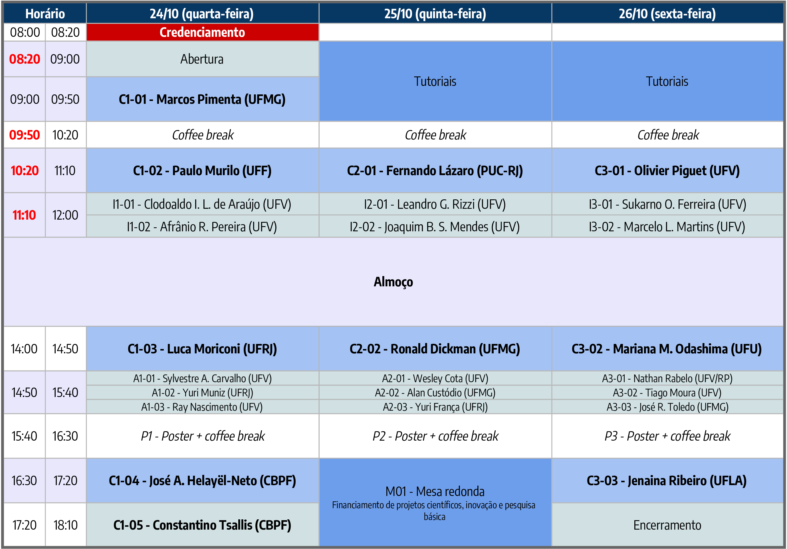

O Programa de Pós-Graduação em Física da UFV realiza em 2018 o I Simpósio da Pós-Graduação em Física - UFV. O objetivo deste simpósio é promover a troca de experiência entre estudantes e reconhecidos pesquisadores do cenário nacional. O evento ocorre entre os dias 24 e 26 de outubro de 2018, e tem como público alvo estudantes de graduação e de pós-graduação do curso de Física e áreas afins. As atividades propostas para o simpósio incluem palestras por professores convidados, apresentações orais de discentes, seção de posters, tutoriais e mesa-redonda.
Local do evento
Auditório da CEAD, na Universidade Federal de Viçosa.
Cronograma

Tutoriais
T-01 – Novos cenários eletromagnéticos inspirados pela Física de Interações Fundamentais (José A. Helayël-Neto)
José A. Helayël-Neto, Centro Brasileiro de Pesquisas Físicas (CBPF) | josehelayel@gmail.com
Diferentes fenômenos relacionados às Interações Fundamentais, à Astrofísica, à Matéria Condensada e à Matéria Nuclear vêm sendo o ponto de partida para a elaboração de modelos variados que têm como consequência a extensão das Equações de Maxwell. Neste tutorial, a proposta é fazer uma varredura desta ampla categoria de modelos eletromagnéticos estendidos (já há quase 50 deles catalogados) discutindo as suas particularidades e peculiaridades e mostrando como o fenômeno eletromagnético ainda nos traz muitos desafios.
T-02 – Introdução à teoria do funcional da densidade (Mariana M. Odashima)
Mariana M. Odashima, Universidade Federal de Uberlândia (UFU) | mmodashima@ufu.br
Neste tutorial abordarei um dos principais métodos de estrutura eletrônica, a teoria do funcional da densidade (DFT). Desenvolvida na década de 60 por Walter Kohn e colaboradores, sua história tem início junto a métodos quânticos do final década de 20, como Hartree-Fock e Thomas-Fermi. Abordaremos esse percurso e apresentarei os pilares da teoria, seu teorema fundamental, e sua implementação via esquema de Kohn-Sham, laureados pelo prêmio Nobel de Química. Por fim, apresentarei a filosofia de construção dos funcionais mais utilizados, aproximação local (LDA), e contendo gradientes da densidade (GGA). O curso propõe uma perspectiva básica sobre as ideias do método e é recomendado a estudantes iniciantes na teoria de estrutura eletrônica, tanto da química quanto da física.
T-03 – Pinças ópticas e aplicações (Márcio S. Rocha)
Márcio S. Rocha, Universidade Federal de Viçosa (UFV) | mrocha.ufv@gmail.com
Neste tutorial faremos uma introdução à técnica experimental de pinças ópticas e suas aplicações nos diversos campos da ciência, em especial na Física, na Química e na Biologia. Serão discutidos os princípios básicos da técnica, a teoria (em nível introdutório) por trás dos equipamentos mais modernos, e os aspectos experimentais de montagem, calibração e execução de medidas com a técnica. Serão discutidas diversas aplicações nos campos da espectroscopia de força em moléculas únicas, no estudo de propriedades viscoelásticas de materiais e células vivas e também no campo da óptica de novos materiais. Finalmente, discutiremos as vantagens e desvantagens das pinças em relação a outras técnicas correlatas, como pinça magnética e microscopia de força atômica.
Programação do dia 24 de outubro de 2018 (quarta-feira)
Convidados
C1-01 – Os materiais bi-dimensionais, suas propriedades e aplicações (Marcos Pimenta)
Marcos Pimenta, Universidade Federal de Minas Gerais (UFMG) | mpimenta11@gmail.com
As experiências pioneiras realizadas com grafeno em 2004 abriram uma nova área de pesquisa na ciência, que é o estudo de materiais bidimensionais (2D) com espessura atômica. O comportamento dos elétrons nesses materiais depende não apenas da estrutura atômica e cristalina, mas também do número de camadas e da ordem de empilhamento entre as camadas. Por exemplo, a estrutura eletrônica do grafeno de duas camadas depende fortemente do ângulo de torção entre as camadas. Vários novos sistemas 2D também foram produzidos e estudados, incluindo uma forma de alótropos de fósforo chamado fósforo negro e os dicalcogenetos de metais de transição MX2. A compreensão das interações entre elétrons em heteroestruturas atomicamente finas é crucial para a engenharia de novos dispositivos 2D. Nesta apresentação, discutirei inicialmente as propriedades físicas dos materiais 2D. Mostrarei depois como a espectroscopia Raman fornece informações sobre elétrons, fônons e suas interações em materiais 2D. Por fim, apresentarei as tecnologias com nanotubos de carbono e grafeno que o Centro de Tecnologia em Nanomateriais (CTNano) da UFMG está desenvolvendo em parceria com empresas.
C1-02 – Modelo investimento-taxação: investimento em grupos (Paulo Murilo)
Paulo Murilo, Universidade Federal Fluminense (UFF) | oliveira.paulomurilo@gmail.com
O modelo citado no título trata de uma população de N agentes, com duas etapas em cada passo de tempo (ano). Primeiro, como resultado de investimento, o patrimônio Wn de cada agente é multiplicado por um fator aleatório obtido de uma distribuição de probabilidades genérica mas fixa. Depois, no final de cada ano, cada agente paga imposto segundo um taxa que depende linearmente do seu patrimônio \[W_n' = W_n (1 - A - p W_n/S),\] onde \(S\) é a soma de todos os patrimônios. O parâmetro importante é o coeficiente angular p desta taxa: valores positivos correspondem à taxação progressiva (ricos pagam taxas maiores do que pobres), enquanto valores negativos de p correspondem à taxação regressiva (pobres pagam taxas maiores do que ricos), que é o caso de todas as economias atuais. A fração do patrimônio total da população que corresponde ao agente \(n\) é \(w_n = W_n/S\). A lista dos \(N\) valores \(w_n\) é sempre considerada em ordem decrescente, o atual agente mais rico corresponde a \(w_1\), o segundo mais rico a \(w_2\), etc. Esta lista varia no tempo mas se estabiliza em torno de uma distribuição de Zipf depois de um certo tempo transiente. Para determinar esta distribuição estabilizada final, mede-se o valor médio de cada \(w_n\) durante um tempo extra adicional (depois do transiente). Repete-se o processo com diferentes realizações dos fatores aleatórios percorridos, e faz-se a média de ensemble das médias temporais. O resultado final é uma transição dinâmica para um estado absorvente, com o patrimônio total da população nas mãos de um único agente, \(w_1 = 1\), e \(w_n = 0\) para todos os demais agentes, no caso da taxação regressiva, \(p < 0\). A evolução da economia é extinta neste caso. Para taxação progressiva, \(p > 0\), no entanto, a evolução dinâmica continua eternamente com a patrimônio total da população distribuído entre os \(N\) agentes, \(1 > w_1 > w_2 > \ldots w_n > 0\). Este modelo já foi estudado e seus resultados estão publicados em EPL, 119 (2017) 40007. Nesta primeira versão, os agentes são inteiramente independentes uns dos outros, nenhuma interação ou correlação entre eles existe. A próxima pergunta se refere ao comportamento do mesmo sistema quando se introduz alguma correlação entre os agentes. Por exemplo, agentes colocados em uma rede de ligações a definir grupos de agentes que investem em conjunto (o mesmo fator aleatório multiplica os patrimônios de todos os agentes do grupo). A transição dinâmica é verificada novamente no mesmo ponto crítico \(p = 0\), taxação regressiva gera o colapso da economia. No entanto, os índices críticos dependem da rede de ligações adotadas.
C1-03 – Magnetohidrodinâmica Turbulenta de Eletrólitos Confinados (Luca Moriconi)
Luca Moriconi, Universidade Federal do Rio de Janeiro (UFRJ) | moriconi@if.ufrj.br
Apresentaremos o PRIMATE (Pipe Rig for the Investigation of Magnetically Affected Turbulence in Electrolites) - futura instalação experimental do Núcleo Interdisciplinar de Dinâmica de Fluidos (NIDF) da COPPE/UFRJ, na qual serão realizados experimentos inaugurais no contexto da turbulência, para o estudo da dinâmica de estruturas vorticais em fluidos eletrolíticos submetidos à presença de campos magnéticos externos. A fim de mostrar a relevância do experimento para o entendimento do (extremamente indesejado) fenômeno da incrustação em escoamentos confinados, faremos diversas conexões com aspectos científicos fundamentais e metodológicos da dinâmica de fluidos (tanto consolidados como ainda em evolução), basilares para a implementação de aplicações inovadoras.
C1-04 – Os 90 anos da Equação de Dirac e suas consequências na Física contemporânea (José A. Helayël-Neto)
José A. Helayël-Neto, Centro Brasileiro de Pesquisas Físicas (CBPF) | josehelayel@gmail.com
Nesta palestra, reviveremos a alvorada da Mecânica Quântica, no rico período entre a proposta do spin (1925), por Uhlenbeck e Goudsmit, e os trabalhos seminais de Heisenberg, Dirac, Schrödinger e Pauli, depois dos quais Dirac propõe a sua celebrada equação em dois trabalhos em Janeiro e Fevereiro de 1928. A partir daí, retornaremos aos anos da formulação da Eletrodinâmica Quântica em suas fases anos-30 e anos-50. Sempre como efeitos da Equação de Dirac, serão revividos os momentos iniciais do Modelo-Padrão, nos anos-60 e -70, e o aparecimento da Supersimetria, subjacente à Equação de Dirac. Mais recentemente, esta aparece também em aplicações a sistemas de Física da Matéria Condensada. Insistiremos no aspecto atemporal deste pilar de sustentação da Física contemporânea.
C1-05 – Constantes Universais da Física Contemporânea e Entropias Não Aditivas (Constantino Tsallis)
Constantino Tsallis, Centro Brasileiro de Pesquisas Físicas (CBPF) | tsallis@cbpf.br
Na física contemporânea existem muitas constantes universais, mas quantas são independentes? Esta interessante questão motiva ricas controvérsias [ver, por exemplo, M.J. Duff, How fundamental are fundamental constants?, Contemporary Physics (2014)]. Argumentaremos a favor de quatro, por exemplo (G, c, h, k) [C. Tsallis, Introduction to Nonextensive Statistical Mechanics - Approaching a Complex World (Springer, New York, 2009)]. A seguir mostraremos como esta questão se entrelaça com a introdução em 1988 de entropias não aditivas, base da mecânica estatística não extensiva. Conceitos essenciais e recentes validações experimentais desta generalização da mecânica estatística de Boltzmann-Gibbs serão ilustrados. Uma extensa Bibliografia está disponível em http://tsallis.cat.cbpf.br/biblio.htm
Convidados Internos
I1-01 – Skyrmions por efeito de proximidade em isolantes topológicos a temperatura ambiente (Clodoaldo I. L. de Araujo)
Clodoaldo I. L. de Araujo, Universidade Federal de Viçosa (UFV) | dearaujo@ufv.br
Desde que os skyrmions foram observados a temperatura ambiente em 2015, em sistemas de multicamadas ferromagnéticas/metal pesado, eles têm sido amplamente estudados para aplicação como portadores de informação em memórias magnéticas mais robustas, não voláteis e de alta densidade. Nesta palestra será abordada a possibilidade de se obter tais estruturas em interfaces ferromagnéticas/isolantes topológicos. Nestas interfaces o efeito de proximidade do material ferromagnético gera um gap de energia no cone de Dirac e sucessivamente uma forte anisotropia interfacial. Serão apresentados resultados experimentais da existência de estados helicoidais gerados no isolante topológico, que persistem até mesmo acima da temperatura de Curie do material ferromagnético. A partir destas observações, dispositivos de memória racetrack de skyrmions baseados em isolantes topológicos podem ser propostos e investigados.
I1-02 – Deu um turbilhão na Pós-Graduação em Física da UFV (Afranio R. Pereira)
Afranio R. Pereira, Universidade Federal de Viçosa (UFV) | apereira@ufv.br
Pretende-se comentar brevemente a relação entre excitações topológicas (vórtices, solitons, skyrmions e mesmo monopolos magnéticos) dentro do contexto da Física da Matéria Condensada (magnetismo, supercondutividade, novos materiais como grafeno, isolantes topológicos) exibindo novas fases (tipo líquidos de spin, gelos de spin etc) com a criação e desenvolvimento da Pós-Graduação em Física na UFV.
Apresentações orais
A1-01 – The Ecoevolutionary and Metacommunity Concept Applied to Allelopathic Species Communities (Sylvestre A. Carvalho)
Sylvestre A. Carvalho, Universidade Federal de Viçosa (UFV) | sylvestre.carvalho@gmail.com
Autores: Sylvestre A. Carvalho - Universidade Federal de Viçosa (UFV), Marcelo L. Martins - Universidade Federal de Viçosa (UFV)
In recent times, the concept of structural stability has emerged as a key theoretical tool for characterizing the response of the ecosystem to the fluctuations of the environment. A natural question that we shall address in this presentation is apply this basic idea to the study of the formation and establishment of allelopathic species communities, investigating the recent observation that microorganisms and plants very commonly synthesize and secrete toxic secondary chemical. The model presented here contains 2N PDEs that describe the bacteria and toxin population dynamics. Their main terms take into account toxin exudation, bacterial mortality, toxin consume, and its natural degradation. We include in our multi-species model a Lotka-Volterra dynamics and an increase in mortality due to allelopathy given by Holling type I, II and III functional responses. We found three types of distributions associated to the topology of the emerging networks. A weak allelopathic suppression allows stable bacterial communities with increasing of complexity, or biodiversity. In this case, the network degree distribution is Gaussian or Normal. For intermediate allelopathic strengths the network connectivities are Poisson distributed and there is a threshold for increased complexity. For stronger allelopathic effects, the communities exhibit statistical properties in which the stability is negatively correlated with complexity. In this case, the network degree distribution is of a Weibull type. So, we predict the relationship between community structure in ecosystems and their properties of stability. In special, the stability of an ecosystem is negatively correlated with its complexity, measured by the number of interacting species. Finally, we obtained a quite interesting finding: formation of spirals pattern when the number of species is odd; when the species number is even, the spirals break up and form disordered spatial structures.
A1-02 – Efeito Purcell na emissão espontânea de dois fótons (Yuri Muniz)
Yuri Muniz, Universidade Federal do Rio de Janeiro (UFRJ) | yurimuniz@if.ufrj.br
Autores: Y. Muniz - Universidade Federal do Rio de Janeiro (UFRJ), D. Szilard - Universidade Federal do Rio de Janeiro (UFRJ), W.J.M. Kort-Kamp - Los Alamos National Laboratory (LANL), F.S.S. Rosa - Universidade Federal do Rio de Janeiro (UFRJ), C. Farina - Universidade Federal do Rio de Janeiro (UFRJ)
Emissão espontânea (EE), considerada como um dos fenômenos mais notáveis da eletrodinâmica quântica, consiste na emissão de um ou mais fótons por um átomo excitado (ou qualquer outro emissor quântico) no vácuo ao decair para um estado de menor energia. O tempo de vida de um emissor não é uma propriedade intrínseca, mas também depende de sua vizinhança. Essa dependência é conhecida como efeito Purcell em homenagem a Edward Mills Purcell, que previu este fenômeno em 1946 e desde então este efeito tem sido amplamente estudado na EE de um fóton. Dependendo da vizinhança, a taxa de emissão pode ser aumentada, diminuída e até mesmo suprimida. Quando a EE de um fóton é proibida, processos em ordem mais alta tornam-se relevantes, como no caso da EE de dois fótons, que é um processo de segunda ordem onde o emissor decai emitindo dois fótons simultaneamente. Recentemente, o estudo desse processo aumentou substancialmente pois desempenha um papel fundamental em diversas áreas, como informação quântica. Controlar a geração de dois fótons e suas propriedades é, portanto, de extremo interesse. Nesse trabalho, apresentaremos um formalismo para o cálculo da taxa de EE de dois fótons de um átomo excitado na presença de um meio material. Nossa abordagem consiste na quantização do campo eletromagnético sujeito a condições de contorno impostas pelo ambiente no qual se encontra o átomo. Aplicaremos esse formalismo em alguns casos, a saber, um átomo próximo a uma ou duas placas perfeitamente condutoras e um átomo próximo a um meio dielétrico semi-infinito.
A1-03 – A facile synthesis route for preparing aqueous colloidal CdS quantum dots with size-tunable optical properties (Ray)
Ray, Universidade Federal de Viçosa (UFV) | ray_maronesi@hotmail.com
Autores: Ray Nascimento Maronesi - Universidade Federal de Viçosa, Diego Lourençoni Ferreira - Universidade Federal de São João Del Rei
A simple one-pot route for the chemical synthesis of CdS colloidal quantum dots in aqueous medium was developed. In this wet chemical preparation, the anionic surfactant SDS (sodium dodecylsulfate) was used as the organic stabilizer added to the solution of chemical precursors containing the appropriate sources of the metallic cation (Cd\(^{2+}\)) and the chalcogenide anion (S\(^{2-}\)). The optical characterization was performed by means of ultraviolet-visible absorption and photoluminescence spectroscopy. Particle size distributions were obtained from the statistical analysis of atomic force microscopy (AFM) images generated for several quantum dot samples. The maximum of each AFM histogram was correlated to the size determined from absorption onset measurements combined with a well-established effective mass model for the size-dependent bandgap of spherical semiconductor quantum dots. An alternative theoretical model capable of providing improved size estimates was also proposed and implemented. From a simple experimental protocol based on the variation of the chalcogenide precursor concentration in the reaction medium, CdS quantum dots with size-tunable band-edge absorption and emission were synthesized.
Apresentações em pôster
P1-01 – Pure optically induced oscillation of topological insulator microparticles (Warlley H. Campos)
Warlley H. Campos, Universidade Federal de Viçosa (UFV) | warlley.campos@ufv.br
Autores: Warlley H. Campos - Universidade Federal de Viçosa (UFV), Jakson M. Fonseca - Universidade Federal de Viçosa (UFV), Vagner E. de Carvalho - Universidade Federal de Minas Gerais (UFMG), Joaquim B.S. Mendes - Universidade Federal de Viçosa (UFV), Márcio S. Rocha - Universidade Federal de Viçosa (UFV), Winder A. Moura-Melo - Universidade Federal de Viçosa (UFV)
The optical tweezers (OT) is a very well established technique used to trap and manipulate microscopic objects using light. If the trapped object is a dielectric particle, heating effects are minimal and the gradient optical force predominates, attracting the particle toward the focus of the laser beam. In turn, metallic particles suffer the action of very strong scattering radiometric forces, originated by inhomogeneous heating of the particle and its vicinity. Here, we study the behavior of topological insulator (TI) microparticles in a Gaussian laser beam OT. TI’s are known for having very unique properties, such as a conductive surface and an insulating bulk. As a consequence, gradient and radiometric forces compete, causing the TI particles to oscillate in a plane perpendicular to the direction of the laser propagation [1]. We describe the oscillations by proposing an effective model that captures the main quantities of interest, namely, the forces acting on the particles, amplitude of oscillation, periodicity and their dependence on particles size. The intrinsic behavior of TI particles as optically induced oscillators opens an avenue for dynamical measurements with unprecedented simplicity and purely optical control. Among the possibilities is the optical rheology of biological membranes, as well as dynamical force measurements in macromolecules and biopolymers without mechanical interventions on the laser setup. Research supported in Brazil by the agencies CNPq, CAPES, FINEP, and FAPEMIG. References: [1] W. H. Campos, J. M. Fonseca, V. E. de Carvalho, J. B. S. Mendes, M. S. Rocha and W. A. Moura-Melo. Topological Insulator Particles As Optically Induced Oscillators: Toward Dynamical Force Measurements and Optical Rheology. ACS Photonics, 5, 741-745 (2018).
P1-02 – Caracterização de heteroestruturas magnéticas com aplicações na spintônica (Diuary)
Diuary, Universidade Federal de Viçosa (UFV) | diuary@gmail.com
Autores: Diuary Gonçalves - Universidade Federal de Viçosa (UFV), Obed Alves Santos - Universidade Federal de Viçosa (UFV) e Joaquim Bonfim Santos Mendes - Universidade Federal de Viçosa (UFV)
A spintrônica é a área de Física da Matéria Condensada que investiga fenômenos da manipulação do momento angular de spin do elétron. Estes fenômenos vão desde o controle de um único spin, ou a geração e controle de correntes puras de spin e a sua interação com correntes de cargas. Enquanto que o controle das propriedades de um único spin localizado é ideal para investigar qbits em Física do Estado Sólido, as propriedades dinâmicas são importantes para a controle de sinais eletrônicos utilizando o spin do elétron. Os problemas de interesse neste trabalho envolvem a fabricação de estruturas utilizadas na investigação de fenômenos de manipulação de spin e sua caracterização. Neste trabalho, através do método de esfoliação mecânica foram fabricadas heteroestruturas de YIG/MoS2 e caracterizadas utilizando as técnicas de espalhamento Raman, Microscopia de Força Atômica (AFM), Microscopia Eletrônica de Varredura (MEV) e difração de raios-X. Por fim, conseguimos utilizar as amostras de YIG/MoS2 em experimentos de geração, transporte e detecção de correntes de spin através da técnica de spin pumping. A segunda parte do trabalho realizado foi dedicada a instrumentação científica, com o intuito de construir e otimizar a técnica de Efeito Seebeck de Spin (SSE). O SSE está relacionado com a geração de uma corrente pura de spin em heteroestruturas magnéticas devido a aplicação de um gradiente térmico. Dessa forma, foi escrito um programa utilizando a linguagem de programação gráfica LabVIEW para o controle dos equipamentos envolvidos no experimento. Por fim, utilizamos a técnica de SSE que foi montada para realizar experimentos de geração de correntes de spin em bicamadas formadas por materiais ferromagnéticos em contato com metais não magnéticos.
P1-03 – Magnetic charge dynamics in unidirectional spin ice lattices (Rafael S. G.)
Rafael S. G., Universidade Federal de Viçosa (UFV) | faelgonalves@gmail.com
Autores: R. S. Gonçalves - Universidade Federal de Viçosa (UFV), R. P. Loreto - Universidade Federal de Viçosa (UFV), J. Borme - International Iberian Nanotechnology Laboratory (INL), P. P. Freitas - International Iberian Nanotechnology Laboratory (INL), C. I. L. Araujo - Universidade Federal de Viçosa (UFV)
Sets of nanomagnets are often utilized to mimic cellular automata in design of nanomagnetic logic devices or frustration and emergence of magnetic charges in articial spin ice systems. in previous work we showed that unidirectional arrangement of nanomagnets can behave as articial spin ice, with frustration arising from second neighbor dipolar interaction, and present good magnetic charge mobility due to the low string tension among charges. Here, we present an experimental investigation of magnetic charge population and mobility in function of lateral and longitudinal distance among nanomagnets. Our results corroborate partially the theoretical predictions, performed elsewhere by emergent interaction model, could be useful in nanomagnet logic devices design and brings new insights about the best design for magnetic charge ballistic transport under low external magnetic eld with magnetic charge mobility tunning for application in magnetricity.
P1-04 – BKT transition effects on spin current injection. (Ricardo Lopes)
Ricardo Lopes, Universidade Federal de Viçosa (UFV) | ricardo.lopes@ufv.br
Autores: Antônio Ribeiro de Moura - Universidade Federal de Viçosa (UFV), Ricardo Junior Campos Lopes - Universidade Federal de Viçosa (UFV)
In this work, we investigated temperature effects on spin current through an interface between a normal metal and a quasi-\(2D\) ferromagnetic insulator. Conductive electrons are reflected at the interface absorbing or emitting magnons to the magnetic side. Obviously, the interaction process depends on the temperature and we were interested to find out how the transport of spin current is affected close to the BKT transition. This is an important open question. While the thermodynamics of spin currents in a usual interface is known, the results of a BKT transition are still unknown. As it is well-documented, the BKT transition is associated with the unbinding of vortex-antivortex pairs in two-dimensional models with an \(O(2)\) symmetry. In our work, the ferromagnet is a layered three-dimensional material and a BKT transition is expected in the limit of weak interplane coupling. Using the Self-Consistent Harmonic Approximation (SCHA), we obtained the spin current \(I_s\) as a function of temperature. At the low-temperature limit, the results are similar to those obtained from similar models and at \(T_{BKT}\), the system shows a discontinuous jump associated with vortex dissociation.
P1-05 – Geometrically induced reversion of Hall current in a topological insulator cavity (Warlley H. Campos)
Warlley H. Campos, Universidade Federal de Viçosa (UFV) | warlley.campos@ufv.br
Autores: Warlley H. Campos - Universidade Federal de Viçosa (UFV), Winder A. Moura-Melo - Universidade Federal de Viçosa (UFV), Jakson M. Fonseca - Universidade Federal de Viçosa (UFV)
It is known that the metallic surface states of topological insulators (TI’s) are protected by the time reversal symmetry, whose break yields the so-called topological magneto-electric effect (TMEE). Whenever TMEE is in order, an external electric (magnetic) field induces both a polarization and magnetization in the bulk of the material. As a consequence, an electric charge near the plane surface of a TI induces an image magnetic monopole inside its bulk [Qi et al., 2009]. Here, we consider a different configuration, in which the topological surface has a negative curvature. More specifically, we have calculated the induced Hall current and magnetic field resulting whenever the electric charge is placed near a semispherical cavity in the surface of a TI. Our results show that the induced Hall current reverses its rotation whenever the electric charge crosses the semisphere focus. Such a reversion is shown to be equivalent of inverting the charge of the image magnetic monopole [Campos et al., 2017]. In addition, we also discuss upon the case of a semicylindrical cavity, where Hall current reversion appears to be feasible of probing in realistic experiments. These reversions are characteristic of negative curved surfaces, and cannot happen in perfectly spherical or plane TI’s [Qi et al, 2009]. We thank the funding agencies CAPES, CNPq and FAPEMIG for financial support. References: [Qi et al., 2009] X.-L. Qi et al., Science, 323, 1184-1187 (2009). [Campos et al., 2017] W. H. Campos et al., Phys. Lett. A, 381, 417-421 (2017).
P1-06 – Acoplamento entre nanomagnetos mediados por portadores de carga (Fernando)
Fernando, Universidade Federal de Viçosa (UFV) | berosvaldoffam@gmail.com
Autores: Clodoaldo Irineu Levartoski de Araújo - Universidade Federal de Viçosa (UFV), Rafael Gonçalves - Universidade Federal de Viçosa (UFV), Fernando Faria Andrade Martins - Universidade Federal de Viçosa (UFV)
Os gelos de spin artificiais tem sido uma ferramenta eficaz para entender as interações magnéticas em um nível microscópico em sistemas frustrados, visto que dentre várias propriedades eles exibem excitações magnéticas que se comportam como monopolos magnéticos, que se podendo andar livremente, geram algo parecido com uma corrente magnética. Neste projeto, foi estudado a quantidade de carga magnética e a magnetização de amostras de gelos de spin artificiais, constituídas de nanoilhas de permalloy (20nm) com alumínio, através de imagens de microscopia de força magnética (MFM). Em cada uma destas amostras, de dimensões 400nm x 3µm, há diferentes distâncias laterais e longitudinais entre as nanoilhas de NiFe, que foram crescidas por sputtering em substrato de silício. Entre elas foi crescido, posteriormente, alumínio por deposição por deixe de ions, e em seguida, foram obtidas imagens de MFM destas para diferentes valores de campo magnético aplicado. As curvas de magnetização e da carga magnética obtidas, ao serem comparadas com as do trabalho anterior, que estudou as mesmas amostras sem alumínio, demonstraram que a presença deste metal acrescentou uma nova interação no sistema. Estes resultados sugerem que a interação com os portadores de carga elétrica trazem um acoplamento adicional entre os nanomagnetos e as cargas magnéticas.
P1-07 – Efeitos da Coerência Espacial em Campo Próximo (Monalisa Kairine)
Monalisa Kairine, Universidade Federal de Minas Gerais (UFMG) | monakairine@gmail.com
Autores: Monalisa Kairine Pereira - Universidade Federal de Minas Gerais (UFMG), Luiz Gustavo de Oliveira Lopes Cançado - Universidade Federal de Minas Gerais (UFMG), Ado Jorio de Vasconcelos - Universidade Federal de Minas Gerais (UFMG), Carlos Henrique Monken - Universidade Federal de Minas Gerais (UFMG),
A detecção de campos ópticos em estreita proximidade com a superfície da fonte (regime de campo-próximo) permite sondar componentes de alta frequência espacial que se perderiam na propagação para a zona distante. A medição dessas componentes de alta frequência espacial permite resoluções espaciais além do limite de difração. Esta propriedade tornou-se a principal motivação para o uso de óptica de campo-próximo no estudo de sistemas materiais, especialmente após o advento da nanociência. Há, no entanto, outro aspecto da detecção de componentes de alta frequência espacial de campos ópticos que não foi explorado com o mesmo entusiasmo: no regime de campo-próximo, campos ópticos podem ser correlacionados em extensões espaciais muito menores que o comprimento de onda característico \(\lambda\), revelando propriedades de coerência da fonte. Essas propriedades podem estar relacionadas à morfologia estrutural do meio, ou a aspectos intrínsecos das excitações. Apesar da enorme quantidade de informações que podem ser extraídas dessas propriedades com grande potencial para a caracterização do material, o uso da coerência espacial é um campo praticamente inexplorado na ciência dos materiais até o momento. Este trabalho tem por objetivo a análise teórica de comprimentos de correlação de campos advindos de fontes homogêneas. A partir deste estudo, encontramos evidências teóricas que experimentos realizados em regime de campo-próximo (\(z < \lambda/2\)) permitem a medição de comprimentos de correlação de campo (\(\sigma_\mu\)) inferiores a \(\lambda/2\). Além disso, se tais medidas forem realizadas em diferentes valores de z, ou seja, diferentes distâncias da amostra, comprimentos de correlação da fonte \(\delta\) menores que \(\lambda/2\) poderão ser extraídos da medição de \(\sigma_\mu\).
P1-08 – O eletromagnetismo de Carrol-Field-Jackiw e os supercondutores topológicos (Rodrigo Bruni)
Rodrigo Bruni, Universidade do Estado do Rio de Janeiro (UERJ) | bruni.r.c.l@gmail.com
Autores: Rodrigo da Costa Lima Bruni - Universidade do Estado do Rio de Janeiro (UERJ), Marcelo Santos Guimarães - Universidade do Estado do Rio de Janeiro (UERJ), Pedro Rangel Braga - Universidade do Estado do Rio de Janeiro (UERJ)
Mostraremos neste trabalho que, através da chamada prescrição de Julia-Toulouse para a condensação de defeitos, é possível obter, partindo do eletromagnetismo usual, contribuições topológicas adicionais à ação. Tais contribuições descreverão a dinâmica de tais defeitos bem como a interação destes com os graus de liberdade originais. Aplicaremos esta teoria aos chamados supercondutores topológicos e mostraremos que a teoria efetiva resultante será uma eletrodinâmica de Maxwell-Proca com a adição de um termo conhecido na literatura como eletromagnetismo de Carrol-Field-Jackiw. Discutiremos as vantagens do nosso modelo em relação aos outros e mencionaremos suas possíveis consequências fisicas.
P1-09 – Permanent photoinduced effects on CdTe thin films under micro Raman measurements (Paulo Victor)
Paulo Victor, Universidade Federal de Viçosa (UFV) | pv_sciammarella@yahoo.com.br
Autores: Sukarno O. Ferreira - Universidade Federal de Viçosa (UFV), Renê C. da Silva - Universidade Federal de Viçosa (UFV), Luciano G. Moura - Universidade Federal de Viçosa (UFV), Thamires Soares - Universidade Federal de Viçosa (UFV), Cristiano Fantini - Universidade Federal de Minas Gerais (UFMG)
The cadmium telluride (CdTe) is a semiconductor material broadly applied to photovoltaic cells as a main component to obtain clean energy by converting sunlight into electricity. In addition to this important technological application, the CdTe has also been used in the manufacture of sensors for infrared, x-rays and gamma rays. Recent works highlight changes on surfaces of the cadmium telluride and correlated materials as CdZnTe after Raman measurements due to exposure to the laser radiation even at low power. These changes are not observed by optical inspection, but they may affect the properties of technological interest of these films. This photoinduced effect on the CdTe surface has been discussed controversially way since the 80s. Usually, the first order Raman spectrum of the CdTe is characterized by two well defined peaks at low energy (TO~140 cm\(^{-1}\) and LO~164 cm\(^{-1}\)), but in the points of the samples exposed to a prolonged laser radiation exhibit a peak at ~ 120 cm\(^{-1}\) (associated to single tellurium) which increases with exposure time. Depending on the laser power density and the exposure time, the CdTe spectrum can be saturated by the tellurium peak. In this work, the occurrence of this peak is studied by temporal evolution of the Raman spectra using different laser lines. Techniques such as Atomic force microscopy (AFM) and Scanning Electron Microscopy (SEM) are also used to support the Raman results and interpretations in order to understand the mechanisms that give rise to this irreversible phenomenon.
P1-10 – Multiplex Coherent Anti-Stokes Raman Spectroscopy Setup with Femtosecond and Photonic Crystal Fibers (Katherine Soto)
Katherine Soto, Universidade Federal de Minas Gerais (UFMG) | kathesogo@gmail.com
Autores: Lady Katherine Soto, Leandro Malard
Coherent Anti-Stokes Raman Scattering (CARS) is a spectroscopy method that can be very useful for analysis of chemical substances and biological tissues. The method is a special case of degenerated four wave mixing (DFWM) where two pump beams ω\(_P\) and a Stokes beam ω\(_S\) are combined to generate another beam ω\(_\text{CARS}\) with the following energy conservation rule ω\(_\text{CARS}\)=2ω\(_P\)-ω\(_S\). In CARS, the energy of the two input beams are selected in a way that ω\(_P\)-ω\(_S\)=ω\(_{Vib}\), where ω\(_{Vib}\) is the vibrational energy of a particular sample [1]. In such case, the non-linear emission of CARS beam is increased several orders of magnitude. Therefore, the CARS signal can be used to characterize different types of samples depending on its vibrational energies [2]. However, in order to fully characterize the material is important to access different vibrational energies; this is the so-called Multiplex CARS. In the Multiplex CARS setup the pump (or stokes) beams is spectrally broad, hence it will probe a larger spectral range of vibrational energies. In this work we have setup two different multiplex CARS systems, one is made by using femtosecond lasers pulses as pump and stokes and the other by using a Photonic Crystal Fiber (PCF) as pump [3]. For the first setup we have used 800 nm stokes from a Coherent Mira oscillator (120 fs) and the pump from optical parametric oscillator (from APE) with 120 fs. For the second setup we have used PCF fiber to generate a spectrally broad pump beam that was temporally and spatially overlapped at the confocal microscope with the Stokes beam at 800 nm (Coherent Mira). We will compare the these two experimental setups in order to do multiplex CARS in different samples with good efficiency and stability. We acknowledge financial support from CNPq, CAPES, FINEP and FAPEMIG
P1-11 – Obtenção e caracterização de filmes finos de Hexacianoferrato de Níquel (Victória Assis)
Victória Assis, Universidade Federal de Viçosa (UFV) | victoria.assis@ufv.br
Autores: Victória de Assis - Universidade Federal de Viçosa, Renê Chagas da Silva - Universidade Federal de Viçosa, Joaquim Bonfim Santos Mendes - Universidade Federal de Viçosa
O Azul da Prússia (AP) e seus análogos têm atraído atenção devido as suas propriedades eletrocatalíticas, eletrocômicas, iônicosensiveis e eletroquímicas. Estas propriedades permitem que estes compostos sejam utilizados em diversas aplicações das quais podemos citar sensores eletroquímicos, sensores biológicos e baterias. Dos análogos do AP o Hexacianoferrato de Níquel (NiHCF) particularmente, se destaca por suas propriedades atrativas nas reações de oxirredução, que, estão diretamente ligadas à sua estrutura cúbica de face centrada que permite a intercalação/desintercalação de íons de metais alcalinos nos espaços intersticiais, de modo que torna o NiHCF sensível aos mesmos, tendo facilidade para detecta-los, além de favorecer o armazenamento de energia. Este trabalho tem como objetivo a obtenção de filmes finos de NiHCF por meio do processo de derivação de uma camada de Níquel eletrodepositada sobre um substrato de Silicio através da técnica de Voltametria Cíclica usando diferentes números de ciclos. Através de caracterizações morfológicas e eletroquímicas, analisou-se a influência da rugosidade superficial em algumas propriedades do composto como armazenamento de energia. Para o cálculo da rugosidade superficial das amostras utilizou-se a Função de Correlação Altura-Altura aplicada as imagens obtidas via AFM.As características morfológicas foram estudadas através de imagens obtidas por MEV, e a estrutura cristalina do composto foi investigada por meio de Espectroscopia Raman e Difração de Raios-X. Medidas de magnetização foram realizadas afim de verificar se há uma relação entre a formação dos filmes de NiHCF com as suas propriedades magnéticas. A técnica eletroquímica de carga e descarga sugere a existência de relação direta da rugosidade com o armazenamento de energia das amostras. Este estudo se torna útil para a otimização de parâmetros possibilitando a obtenção de filmes de NiHCF funcionais de forma controlada que sejam apropriados para aplicações diversas.
P1-12 – Application of the EPD Zeroes to the Two-dimensional Ising Model (Ronaldo G. M. Rodrigues)
Ronaldo G. M. Rodrigues, Universidade Federal de Minas Gerais (UFMG) | ronaldogivisiez@hotmail.com
Autores: Ronaldo G.M.Rodrigues - Universidade Federal de Minas Gerais (UFMG),, Lucas A.S. Mól - Universidade Federal de Minas Gerais (UFMG),, Bismarck V.Costa - Universidade Federal de Minas Gerais (UFMG).,
Zeros of the partition function were introduced by Fisher as an alternative way to study phase transitions. However, this approach has arisen some issues, the analytical treatment is difficult and often impossible, requiring numerical methods. Despite the technological development, we still face two major problems for the Fisher zeros numerical solution, the polynomial generated by the canonical partition function has the coefficient given by density of states and their degree depends on the size of the system. Then we have to deal with high degree polynomials at the order of \(30.000\) and the imprecision generated by numerical computation using the density of states, which has the difference between their maximal and minimal value at the order of \(10^{400}\). Aiming the solution to those problems, an alternative method has been proposed [1] based on the Fisher zeros and able to solve these issues. After a simple transformation , the polynomials coefficients are given by the energy of the system, which has values between \([0,1]\), if correctly normalized. This way, we have a clear criterion to select the most relevant coefficients of the polynomial, drastically reducing their degree. In this work, we apply this new method to Ising model and two-dimensional XY, analyzing the effects of the chosen cut in the histogram and discussing the behavior of the proposal algorithm in [1]. [1] COSTA, B. V.; MÓL, L. A. S.; ROCHA, J. C. S. Energy Probability Distribution Zeroes: A New Route to Study Phase Transitions. arXiv, p. 5, 2016.
P1-13 – Binary mixing of lattice gases: A Grand canonical solution on a Husimi lattice (Nathann T. Rodrigues)
Nathann T. Rodrigues, Universidade Federal de Viçosa (UFV) | nathan.rodrigues@ufv.br
Autores: Nathann Teixeira Rodrigues - Universidade Federal de Viçosa (UFV), Tiago José de Oliveira - Universidade Federal de Viçosa (UFV)
Lattice gases (LG) have long been used for modeling the behavior of several systems, with special application in the study of the thermodynamic behavior of fluid systems. Even the simplest LG models, featured only by infinite excluded volume interactions between identical particles, are known to present fluid-solid transitions, provided that the particle sizes are larger than the lattice constant. Such athermal LG models have been extensively studied in several lattices, for different ranges of repulsion, i.e., until first (1NN), second (2NN), third (3NN) neighbors and so on. Hard-lattice gases with a mixture of particles, on the other hand, are far less explored, despite their appeal to model more complex fluids. As far as we know, only the case with point-like particles (0NN) mixed with 1NN ones was investigated on the triangular and square lattices, displaying rich phase diagrams and, in the last case, thermodynamic anomalies. In this work, we investigate three models of binary mixtures: point-like particles (0NN) with 1NN ones, 0NN with particles 2NN (which exclude until their second neighbors) and particles 1NN with 2NN ones. We solve these models on a Husimi lattice built with cubes, which provides a mean-field approximation for the model on a cubic lattice, using the grand-canonical formalism, so we associate activities \(z_0\), \(z_1\) and \(z_2\) to particles 0NN, 1NN, and 2NN, respectively. In all these models we found rich phases diagrams with critical lines, tricritical points, triple points, and discontinuous transitions. We also found thermodynamic anomalies in two models: particles 0NN with 1NN and 0NN with 2NN particles. In the last, surprisingly, we found three stable phases, gas, liquid and solid with a phase diagram quite similar to the one for the water, for example. The anomaly found is also similar to the density anomaly founded for the water, but in this model, the anomaly is characterized by a minimum in isobaric curves of the total density.
P1-14 – Um Estudo de Redes Complexas Temporais: Análises Estruturais e Dinâmicas (Hugo P. Maia)
Hugo P. Maia, Universidade Federal de Viçosa (UFV) | hugopereiramaia@gmail.com
Autores: Hugo P. Maia - Universidade Federal de Viçosa (UFV), Wesley Cota - Universidade Federal de Viçosa (UFV), Silvio C. Ferreira Jr. - Universidade Federal de Viçosa (UFV)
Diversos sistemas sociais, de neurônios no cérebro e mesmo a própria internet podem ser descritos por redes complexas temporais. A base dos modelos de redes complexas envolve a representação dos constituintes de um sistema como vértices e as interações como arestas, com cada vértice podendo fazer múltiplas conexões definindo seu grau (número de conexões feitas). Porém, nem sempre as conexões permanecem as mesmas com o passar do tempo. Por isso, podemos classificar as redes como estáticas, nas quais as conexões entre vértices não mudam com o tempo, ou temporais, nas quais cada conexão existe por apenas um intervalo ou instante de tempo. Essa dinâmica temporal é de extrema importância, não só para redes sociais, mas também para outros tipos de redes como na propagação de doenças, informações e até mesmo opiniões. Um dos modelos para construir redes temporais é o “Modelo conduzido por atividade”, que consiste na formação aleatória de conexões de um vértice seguindo uma distribuição de atividade. Neste trabalho, foram utilizados dados reais adquiridos de redes sociais, mais especificamente do Twitter, de interações em determinadas regiões geográficas e também de palavras chaves específicas. Investigamos diferentes propriedades estruturais de diferentes redes e como elas se alteram com o tempo, e os resultados foram condizentes com o esperado pelo modelo conduzido por atividade. Também estudamos a dinâmica da variação da frequência de atividades dos vértices em redes temporais e outras medidas típicas realizadas em redes temporais. A análise da propagação de informação nestas redes temporais foi feita usando o modelo Suscetível-Infectado, no qual cada vértice infectado transmite uma dada informação para cada um de seus vizinhos suscetíveis com taxa λ. Outras análises também foram feitas com a versão integrada da rede, que é uma rede estática, porém ponderada, comparando tais resultados com os obtidos nas redes temporais para compreender o efeito da dimensão temporal.
P1-15 – Um modelo híbrido para a terapia oncolítica (Kelly Molica)
Kelly Molica, Universidade Federal de Viçosa (UFV) | kelly.molica@ufv.br
Autores: Kelly Aparecida Molica - Universidade Federal de Viçosa, Marcelo L. Martins - Universidade Federal de Viçosa
Neste trabalho foi proposto um modelo híbrido para descrever a evolução de um tumor avascular submetido à terapia oncolítica. Esse estágio pode representar micrometástases de um tumor primário previamente detectado. Na terapia oncolítica, vírus modificados que infectam preferencialmente células tumorais e provocam a lise celular são usados. O problema é que devido à infecção viral, o tumor libera sinais de infecção que ativam o sistema imune do hospedeiro, particularmente as células T e B. A dinâmica anterior foi simulada em uma rede virtual. O tumor cresce a partir de uma célula cancerosa introduzida no centro da rede. Cada célula tumoral pode estocasticamente realizar uma de três ações: duplicar, mover ou morrer. Quando o tumor contem 5000 células tumorais, são inseridas partículas virais que representam uma dosagem de vírus oncolíticos. Eles deslocam-se pela rede e, ao ocuparem sítios com “células tumorais”, têm a chance de infectar tais células ou de mover-se na rede. Caso uma célula seja infectada, ela passa a produzir vírus que serão liberados na rede com a lise celular. A célula infectada também libera citocinas na rede até sua lise ou eliminação. O sinal de infecção difunde na rede através da equação de difusão discretizada. Quando a concentração do sinal supera um limiar em uma das bordas da rede inicia-se a entrada de células T e B. A taxa de entrada das células do sistema imune em cada sítio é suposta depender linearmente da concentração das citocinas e essas células movem-se em direção ao tumor guiadas pelo gradiente do sinal de infecção. Ao encontrar uma célula tumoral infectada, uma célula T destrói a célula infectada com uma probabilidade pré-definida e cada célula B libera anticorpos que inativam vírus oncolíticos livres localizados dentro de uma vizinhança dessa célula. Neste trabalho apresentamos os resultados preliminares da simulação dessa dinâmica que visam determinar as regiões de sucesso ou de falha terapêutica.
P1-16 – Controle de propriedades elétricas dos dicalcogenetos de metais de transição por microscopia de varredura por sonda (Maurício Bessa)
Maurício Bessa, Universidade Federal de Ouro Preto (UFOP) | mauriciobessa@outlook.com
Autores: Maurício V. Bessa - Universidade Federal de Ouro Preto (UFOP); Luiz G. Pimenta Martins - Massachusetts Institute of Technology, Cambridge, MA, USA; Bernardo R. A. Neves - Universidade Federal de Minas Gerais (UFMG); Ana Paula M. Barboza - Universidade Federal de Ouro Preto (UFOP).,
Os chamados materiais 2D têm despertado interesse de pesquisadores, graças suas propriedades mecânicas, elétricas e ópticas. Uma das principais ferramentas utilizadas na caracterização e manipulação desses materiais é a Microscopia de Varredura por Sonda (Scanning Probe Microscopy - SPM). Neste projeto serão apresentados resultados a respeito de propriedades eletromecânicas de Dicalcogenetos de Metais de Transição (TMDs - Transition Metal Dichalcogenides) utilizando técnicas de SPM. Os TMDs são materiais lamelares, com fraca interação entre as camadas e, portanto, podem ser mecanicamente esfoliados. Foram analisados quatro TMDs: MoS2, MoSe2, WS2 e WSe2. Resultados teóricos, descritos na literatura [1,2], mostram que a aproximação das camadas, nesses materiais, provoca uma redução no gap de energia dos mesmos. Utilizando técnicas de SPM aplicamos, simultaneamente, compressão e campo elétrico em camadas de TMDs de diferentes espessuras. Notamos que a eficiência do processo de injeção de carga elétrica é dependente da pressão exercida pela ponta sobre a amostra. O raio da ponta varia de 10 a 15nm. Para forças baixas (pressões baixas) a quantidade de carga injetada é pequena. Para forças mais altas e, portanto, pressões maiores, a quantidade de carga injetada aumenta. Os sistemas atingem uma saturação na quantidade de carga injetada, para um limiar de força, indicando um comportamento tipicamente metálico (ou de um semicondutor altamente dopado). Medidas de Potencial de Superfície (SKPM) mostram que o efeito é, aparentemente, estável em condições ambientes para o MoS2. Testes vem sendo realizados nos demais materiais para verificação da estabilidade do efeito de transição. Referências [1] A. Kumar e P. K. Ahuwalia. Modelling and Simulation in Materials Science and Engineering, 21(6), 065015 (2013). [2] S. Bhattacharyya, A. K. Singh. Physical Review B, 86(7), 075454 (2012).
P1-17 – Efeitos da cafeína sobre a estrutura da molécula de DNA: um estudo por espectroscopia de força (Tiago Moura)
Tiago Moura, Universidade Federal de Viçosa (UFV) | tiago.moura.ufv@gmail.com
Autores: Tiago de Assis Moura- Universidade Federal de Viçosa, Marcio dos Santos Rocha- Universidade Federal de Viçosa
Neste trabalho, utilizando a técnica de pinça óptica, foi possível estudar as alterações das propriedades mecânicas do complexo DNA-cafeína em função da concentração de cafeína na amostra, nos regimes de força iônica alta (concentração total de sódio de 150 mM) e força iônica baixa (concentração total de sódio de 1 mM). Utilizando o modelo de exclusão de vizinhos para ajustar os dados obtidos experimentalmente para o comprimento de contorno, demostramos que a cafeína não possui comportamento de intercalante. Além disso, fomos capazes de observar uma mudança conformacional da molécula de DNA devido a ligação com a cafeína, onde essa mudança ocorre no sentido de transformar o B-DNA em A-DNA. A alteração da força iônica da solução foi capaz de mudar a forma de interação da cafeína ao DNA. Para força iônica alta, a ligação da cafeína ao DNA apresenta cooperatividade positiva, possuindo um coeficiente de Hill (n) igual a 3. No regime de força iônica baixa, a cooperatividade da ligação desapareceu e o coeficiente de Hill diminuiu para 1. Fomos capazes também de estimar o constante de ligação da cafeína ao DNA como sendo 𝐾𝑖 = (0,3 ± 0,02)10−1𝑀−1 para força iônica alta e 𝐾𝑖 = (7,3 ± 4,0)10−1𝑀−1 no regime de força iônica baixa.
P1-18 – The Onset of Intermittency in Stochastic Burgers Hydrodynamics (Gabriel Apolinário)
Gabriel Apolinário, Universidade Federal do Rio de Janeiro (UFRJ) | gabrielbritoapolinario@gmail.com
Autores: Gabriel B. Apolinário - Universidade Federal do Rio de Janeiro (UFRJ), Luca Moriconi - Universidade Federal do Rio de Janeiro (UFRJ), Rodrigo M. Pereira - - Universidade Federal de Pernambuco (UFPE)
We study the onset of intermittency in stochastic Burgers hydrodynamics, as manifested from the non-Gaussian behavior of large negative velocity gradient fluctuations. Our analysis is carried out within the response functional formalism, where specific velocity configurations - the viscous instantons - are assumed to play a dominant role in modeling the left tails of velocity gradient probability distribution functions. We find, as it has been previously conjectured on purely empirical grounds, that the instanton approach becomes meaningful in practice only if the effects of fluctuations around instantons are taken into account. Working with a systematic cumulant expansion, it turns out that the integration of fluctuations yields, in leading perturbative order, to an effective description of the Burgers stochastic dynamics given by the renormalization of its associated heat kernel propagator and the external force-force correlation function.
P1-19 – Construction of a Chern-Simons Model for Gravity (Matheus Paixão)
Matheus Paixão, Universidade Federal de Viçosa (UFV) | matheusespigalo@hotmail.com
Autores: Matheus Maia de Araújo Paixão - Universidade Federal de Viçosa (UFV), Olivier Piguet - Universidade Federal de Viçosa (UFV)
The aim of this work is the study of a Chern-Simons gravity in five space-time dimensions. We consider an expansion of the five-dimensional \((a)dS\) algebra, that is the product between the \((a)dS_5\) and a cyclic semigroup. So we construct a Chern-Simons Lagrangian invariant under this new algebra, and in the following, we perform the Dirac Hamiltonian formalism, identifying the constraints of first and second class, calculating the corresponding Dirac brackets, and counting the degrees of freedom of the proposed model.
P1-20 – Stochastic quantization of a self-interacting nonminimal scalar field in semiclassical gravity (Eduardo Reis)
Eduardo Reis, Universidade Federal de Juiz de Fora (UFJF) | eduardoantonioreis@gmail.com
Autores: Eduardo Antonio dos Reis - Universidade Federal de Juiz de Fora (UFJF), Gastão Krein - Instituto de Física Teórica - Universidade Estadual Paulista (IFT-UNESP), Tibério de Paula Netto - Universidade Federal de Juiz de Fora (UFJF), Ilya L. Shapiro -Universidade Federal de Juiz de Fora (UFJF)
We employ stochastic quantization for a self-interacting nonminimal massive scalar field in curved spacetime. The covariant background field method and local momentum space representation are used to obtain the Euclidean correlation function and evaluate multi-loop quantum corrections through simultaneous expansions in the curvature tensor and its covariant derivatives and in the noise fields. The stochastic correlation function for a quartic self-interaction reproduces the well-known one-loop result by Bunch and Parker and is used to construct the effective potential in curved spacetime in an arbitrary dimension \(D\) up to the first order in curvature. Furthermore, we present a sample of numerical simulations for \(D=3\) in the first order in curvature. We consider the model with spontaneous symmetry breaking and obtain fully nonperturbative solutions for the vacuum expectation value of the scalar field and compare them with with one- and two-loop solutions.
Programação do dia 25 de outubro de 2018 (quinta-feira)
Mesa redonda
M01 – Mesa redonda: Financiamento de projetos científicos, inovação e pesquisa básica
Mesa redonda para conversar sobre o financiamento de projetos científicos, inovação e pesquisa básica no Brasil.
Convidados
C2-01 – Síntese, caracterização e aplicações de Materiais 2D: pesquisa na PUC-Rio (Fernando Lázaro)
Fernando Lázaro, Pontifícia Universidade Católica do Rio de Janeiro (PUC-Rio) | lazaro.puc@gmail.com
Nesse seminário iremos apresentar os resultados obtidos nos últimos anos em nosso laboratório na PUC-Rio relativos ao estudo do grafeno e de TMDs. Inicialmente apresentaremos resultados referentes à síntese de grafeno por CVD em substratos isolantes (silica e filmes de SiO2) e semicondutores (Ge), bem como a incorporação de dopantes em grafeno CVD crescidos em substratos de cobre. As amostras foram caracterizadas por XPS, STM, MEV, microscopia ótica, AFM e Raman. Algumas aplicações como material absorvedor de radiação eletromagnética (Micro-ondas) e sensores de gás foram desenvolvidas a partir do aprimoramento da técnica de transferência do grafeno crescido em substratos de cobre para outros substratos. Resultados recentes da síntese deTMDs (MoS2 e WS2) e sua caracterização também serão apresentados.
C2-02 – Termodinâmica e coexistência de fases longe de equilíbrio (Ronald Dickman)
Ronald Dickman, Universidade Federal de Minas Gerais (UFMG) | dickman@fisica.ufmg.br
Nessa palestra vou discutir estudos recentes sobre a possibilidade de estender a termodinâmica para estados estacionários de não-equilíbrio (EENE). As definições da temperatura T e do potencial químico μ para EENE são analisadas no contexto de modelos simples, estocásticos. Para EENE uniformes no espaço, a coexistência com um reservatório (de calor, ou de partículas) fornece definições consistentes de T e μ, se usamos taxas de troca adequadas. Se definirmos uma função entropia na base desses parâmetros intensivos, verificamos que, fora de equilíbrio, ela não é igual à entropia de Shannon. O esquema de termodinâmica de EENE falha para sistemas não-uniformes. Estudos de EENE exibindo coexistência de fases demonstram que, diferente de equilíbrio, as propriedades de cada fase dependem de como a troca de partículas e energia é realizada.
Convidados Internos
I2-01 – Nucleação de moléculas com interações anisotrópicas (Leandro Rizzi)
Leandro Rizzi, Universidade Federal de Viçosa (UFV) | lerizzi@ufv.br
A nucleação de moléculas que interagem via interações anisotrópicas pode ser observada em uma grande variedade de sistemas e o seu entendimento deve influenciar aplicações que vão desde o crescimento controlado de filmes metálicos em substratos anisotrópicos na área de nanotecnologia, até na supressão da formação de fibras amilóides, as quais estão relacionadas à diversas proteinopatias nocivas aos seres humanos. Neste trabalho utilizamos o método de Monte Carlo cinético para explorar os efeitos causados por interações anisotrópicas na nucleação de moléculas descritas por um modelo minimalista de cristal. Através do cálculo de quantidades termodinâmicas tais como o núcleo crítico e taxas de nucleação, ambos em função da supersaturação de moléculas, esclarecemos algumas das características do processo de cristalização que não podem ser descritas pela teoria clássica da nucleação.
I2-02 – Spintrônica baseada em materiais bidimensionais (Joaquim Mendes)
Joaquim Mendes, Universidade Federal de Viçosa (UFV) | joaquimbsmendes@gmail.com
Nessa última década a área de spintrônica ganhou um grande impulso com a descoberta de vários fenômenos de transporte dependente de spin que ocorrem em nanoestruturas constituídas por materiais magnéticos e não magnéticos. Dentre eles destacam-se o efeito spin-Hall (spin Hall effect-SHE), o efeito spin-Hall inverso (inverse spin Hall effect-ISHE) e o efeito spin-Seebeck (spin Seebeck Effect-SSE)1,2. Esses fenômenos possibilitam a conversão de um tipo de corrente de transporte em outro, seja de carga elétrica, de spin ou de calor, o que abre muitas novas possibilidades de investigação básica e de aplicações tecnológicas. O Grupo de Spintrônica e Nanomagnetismo do Departamento de Física da UFV (DPF/UFV) tem trabalhado em diversos aspectos dos fenômenos nesta área, em particular sobre o torque induzido por transferência de spin, geração e manipulação de correntes de spin por meio dos efeitos de spin pumping, spin-Seebeck e spin-Hall. Portanto, nesta apresentação, serão abordados temas que envolvem a associação de materiais 2D (tais como: metais de transição dicalcogenados - TMDs, isolantes topológicos, além do próprio grafeno) com materiais magnéticos com o intuito de estudar os mecanismos comentados anteriormente3,4,5. 1J. Sinova et al. Rev. Mod. Phys. 87, 1213 (2015). 2G. E. W. Bauer et al. Nature Materials, 11, 391, 2012. 3J. B. S. Mendes et al. Phys. Rev. Lett. 115, 226601, 2015. 4J. B. S. Mendes et al. Physical Review B, 96, 180415-1, 2017. 5J. B. S. Mendes et al. Applied Physics Letters, 112, 242407, 2018.
Wesley Cota, Universidade Federal de Viçosa (UFV) | wlcota@gmail.com
Autores: Wesley Cota - Universidade Federal de Viçosa (UFV), Géza Ódor - MTA-EK-MFA, Centre for Energy Research of the Hungarian Academy of Sciences (Hungria), Silvio C. Ferreira - Universidade Federal de Viçosa (UFV)
Griffiths phases (GPs), generated by the heterogeneities on modular networks, have recently been suggested to provide a mechanism, rid of fine parameter tuning, to explain the critical behavior of complex systems. One conjectured requirement for systems with modular structures was that the network of modules must be hierarchically organized and possess finite dimension. We investigate the dynamical behavior of an activity spreading model, evolving on heterogeneous random networks with highly modular structure and organized non-hierarchically. We observe that loosely coupled modules act as effective rare-regions, slowing down the extinction of activation. As a consequence, we find extended control parameter regions with continuously changing dynamical exponents for single network realizations, preserved after finite size analyses, as in a real GP. The avalanche size distributions of spreading events exhibit robust power-law tails. Our findings relax the requirement of hierarchical organization of the modular structure, which can help to rationalize the criticality of modular systems in the framework of GPs. Financial support: CAPES, CNPq and FAPEMIG. [1] Scientific Reports 8:9144 (2018)
A2-02 – Transformações estruturais e eletrônicas em nanomateriais bidimensionais sob pressão (Alan Custódio)
Alan Custódio, Universidade Federal de Minas Gerais (UFMG) | alan.custodio.reis@hotmail.com
Autores: Alan Custódio dos Reis Souza - Universidade Federal de Minas Gerais - UFMG, Mario Sergio de Carvalho Mazzoni - Universidade Federal de Minas Gerais - UFMG, Matheus Josué de Souza Matos - Universidade Federal de Ouro Preto - UFOP, Hélio Chacham - Universidade Federal de Minas Gerais - UFMG,
Através da Teoria do Funcional de Densidade (DFT) buscamos estudar as propriedades eletrônicas e estruturais de materiais obtidos em laboratórios por colaboradores experimentais. Em primeiro lugar, estudamos uma transição metal-semicondutora que acontece ao submeter heteroestruturas de grafeno sobre de nitreto de boro hexagonal a altas pressões em um experimento de Microscopia de Força Atômica. Em segundo lugar, investigamos a formação de estruturas tipo diamante obtidas ao submeter multicamadas de grafeno a altas pressões em um experimento de espectroscopia Raman. Por último, analisamos o comportamento de um defeito chamado de centro de vacância-nitrogênio nesses nanodiamantes. Em síntese, através de modelos teóricos de primeiros princípios, obtivemos estruturas com comportamento eletrônico em excelente acordo com os resultados experimentais, tanto para o grafeno sobre nitreto de boro quanto para os filmes finos de diamante. Os resultados teóricos reforçam a viabilidade da utilização de nanodiamantes com centro de nitrogênio-vacância, pois apresentam fenomenologia semelhante as que são obtidas no bulk e menor energia de formação.
A2-03 – Repulsive van der Waals interaction between a quantum particle and a conducting toroid (Yuri França)
Yuri França, Universidade Federal do Rio de Janeiro (UFRJ) | yuridiasf@gmail.com
Autores: Yuri França - Universidade Federal do Rio de Janeiro (UFRJ), Patrícia Abrantes - Universidade Federal do Rio de Janeiro (UFRJ), Felipe Rosa - Universidade Federal do Rio de Janeiro (UFRJ), Carlos Farina - Universidade Federal do Rio de Janeiro (UFRJ), Reinaldo de Melo - Universidade Federal Fluminense (UFF)
Since the advent of quantum mechanics it has been realized that charge, current and field fluctuations play a crucial role in many phenomena from nano to macroscopic scale. Among those, we may highlight the so-called dispersion forces, which are a direct consequence of these quantum fluctuations and explain correctly the interaction between two neutral and non-polar, albeit polarizable, molecules. These forces are responsible for quite different phenomena, varying from the adhesion of geckos and some species of spiders to the ceiling of our houses, to the stability of colloids and the so-called Casimir effect. In this work, we investigate the van der Waals forces exerted on a polarizable quantum particle by a perfectly conducting surface of arbitrary shape. We employ a very convenient method developed by Eberlein and Zietal that essentially transforms the quantum problem of calculating dispersion forces into a (presumably simpler) problem of electrostatics. After briefly reviewing this method, we apply it to compute the van der Waals interaction between a polarizable quantum particle and a conducting toroid. We solve the problem analytically and show that depending on the relations between the various distance parameters of the problem (the two radii of the toroid and the distance from the atom to its center), the force exerted on the particle can be repulsive.
Apresentações em pôster
P2-01 – Pilhas de areia em redes complexas (Arthur Schulenburg)
Arthur Schulenburg, Universidade Federal de Viçosa (UFV) | arthur_314159265@hotmail.com
Autores: Arthur B. S. Schulenburg - Universidade Federal de Viçosa (UFV), Silvio da Costa Ferreira Júnior - Universidade Federal de Viçosa (UFV)
Redes livres de escala são comumente encontradas na natureza, incluindo as redes tecnológicas, como por exemplo a Rede Mundial de Computadores (World Wide Web), redes de energia elétrica, redes metabólicas, redes de neurônios, entre outras. Estas redes possuem a característica dos graus de seus vértices seguirem uma distribuição com cauda em lei de potência. O modelo de Manna é um modelo que apresenta uma transição de fase de um estado absorvente para um estado ativo estacionário. A dinâmica do modelo não permite a criação ou destruição de partículas, ou seja, este número é conservado durante todo o tempo. A dinâmica do modelo consiste em considerar apenas os vértices com um número de partículas \(n_i\) = \(n_c\) ativos, em que \(n_i\) é o número de partículas no vértice e \(n_c\) é o número de partículas crítico, e a cada passo de tempo, transferir cada partícula de um vértice ativo selecionado ao acaso para um de seus vizinhos. Neste trabalho, foi estudado inicialmente a dinâmica deste modelo em redes livre de escala e também em redes regulares, para analisar suas transições de fase em redes de diferentes tamanhos e comparar os expoentes críticos obtidos através das simulações com uma teoria de campo médio, que prevê que a densidade quase estacionária crítica decai com \(\rho_s\) ~ \(N^{-\nu}\), onde \(N\) é o tamanho da rede. Para redes com distribuição de graus homogênea a teoria de campo médio fornece \(\nu = 1/2\). Em nossos resultados preliminares encontramos \(\nu\) = \(0.5005\) e \(\nu\) = \(0.5435\). A análise feita para estudarmos a transição de fase foi realizada a partir da curva de suscetibilidade \(\chi\)(\(\rho\)), que apresenta uma divergência no valor do parâmetro de controle crítico. Foram testados diferentes métodos quase-estacionários com o intuito de verificar a eficiência de cada um, uma vez que o modelo de Manna apresenta infinitos estados absorventes. São eles: quase-estacionário padrão, condição de contorno refletora e reativação por tempo ativo.
P2-02 – Termoestatística de agregação molecular via simulações de Monte Carlo (Lair Figueiredo Trugilho)
Lair Figueiredo Trugilho, Universidade Federal de Viçosa (UFV) | lair.trugilho@ufv.br
Autores: Lair Figueiredo Trugilho - Universidade Federal de Viçosa (UFV), Leandro Gutierrez Rizzi - Universidade Federal de Viçosa (UFV)
A agregação de moléculas é um fenômeno bastante conhecido e está presente no nosso cotidiano, por exemplo na formação de gelo e na agregação de proteínas. No entanto, ainda não está totalmente compreendido como as interações microscópicas influenciam na formação dos agregados, principalmente na formação de agregados biomoleculares. Biomoléculas são formadas por um grande número de átomos, o que torna uma análise detalhada da agregação molecular, i.e. levando em consideração as interações entre todos os átomos, inviável. Portanto, para obter escalas de tempo e de comprimento relevantes experimentalmente, surge a necessidade de descrever estas moléculas por meio de modelos simplificados. Neste trabalho realizamos simulações computacionais utilizando um modelo do tipo Ising para obter as propriedades termoestatísticas da transição de fase de agregação de biomoléculas. Por meio destas simulações obtivemos o inverso da temperatura em função da energia total do sistema e calculamos perfis de energia livre. Estes resultados foram obtidos tanto para redes com interações isotrópicas quanto para redes com interações anisotrópicas. Nossos resultados mostram que, de fato, há uma transição entre uma fase onde a maioria das moléculas estão isoladas, à altas temperaturas, e uma fase onde há a formação de grandes agregados de moléculas, à baixas temperaturas. Além disso, existem evidências de que a teoria clássica da nucleação não pode ser aplicada ao fenômeno de agregação para sistemas biomoleculares, principalmente quando as interações são anisotrópicas. Futuramente, as simulações computacionais desenvolvidas neste trabalho podem fornecer um meio para avaliar as limitações dessa teoria.
P2-03 – Formação e crescimento de quasicristais: uma abordagem pelo método de Monte Carlo cinético (Gabriela Viegas)
Gabriela Viegas, Universidade Federal de Viçosa (UFV) | gabriela.viegas@ufv.br
Autores: Gabriela Viegas (UFV), Leandro G. Rizzi (UFV)
Os quasicristais são sólidos cristalinos que apresentam simetria orientacional de longo alcance mas não há simetria translacional, i.e., não é possível definir uma “célula unitária”. Apesar dos avanços em relação ao estudo teórico e experimental desses materiais, ainda existem questões que não foram totalmente compreendidas, incluindo os mecanismos envolvidos na formação e crescimento de estruturas quasicristalinas. Neste trabalho o objetivo é desenvolver simulações computacionais que explorem tais mecanismos e possam contribuir para a construção de modelos teóricos. A primeira etapa do trabalho desenvolvido consistiu em um estudo sobre redes cristalinas e a descrição destas por meio das redes de Bravais bidimensionais. Foram desenvolvidos programas que obtém as redes no espaço real e recíproco partindo dos parâmetros de rede e ângulo entre os vetores unitários e fornece os padrões de difração dadas as posições dos átomos. A segunda etapa baseou-se na aplicação do método de Monte Carlo cinético à nucleação de um cristal em uma rede bidimensional quadrada. Determinamos os valores para o núcleo crítico, a taxa de nucleação e a probabilidade de crescimento de um cristal macroscópico a partir de um agregado para diferentes valores da concentração de átomos no meio. Na terceira etapa, adaptamos os programas de forma a modelar sua aplicabilidade aos quasicristais. Com esta abordagem trabalhamos modelos geométricos que ilustram o número de ligações feitas pelos diferentes átomos constituintes do quasicristal, testando o aspecto local do crescimento. Assim, esperamos entender melhor a relação entre as características e proporção dos elementos químicos e o caráter da estrutura formada, quasicristalina ou não. Estabelecer um entendimento fundamental sobre os mecanismos envolvidos na formação e crescimento dos quasicristais pode prover um caminho para o desenho racional de materiais com aplicações em nanotecnologia.
P2-04 – Microrreologia de materiais viscoelásticos via simulações de dinâmica estocástica (Tiago Azevedo)
Tiago Azevedo, Universidade Federal de Viçosa (UFV) | tiago.n.azevedo@ufv.br
Autores: Tiago Nascimento de Azevedo - Universidade Federal de Viçosa (UFV), Leandro Gutierrez Rizzi - Universidade Federal de Viçosa (UFV)
Materiais viscoelásticos demonstram um comportamento intermediário entre sólidos e líquidos. Quando submetidos à uma tensão de cisalhamento, sólidos armazenam energia mecânica e são elásticos, enquanto fluidos dissipam energia mecânica e são viscosos. Por outro lado, quando materiais viscoelásticos são tensionados, suas microestruturas armazenam e dissipam energia de uma maneira intermediária que dependente da frequência da tensão aplicada. Materiais com comportamentos tipicamente viscoelásticos podem ser encontrados em diversos sistemas biológicos. Por exemplo, o citoesqueleto de organismos eucariontes, que é composto de uma rede de filamentos semiflexíveis que possui resposta viscoelástica e, portanto, pode ser caracterizado através de técnicas de microrreologia. A microrreologia busca extrair as propriedades mecânicas do material através da análise do movimento browniano de partículas imersas no mesmo. Neste trabalho, em particular, estudamos o movimento de uma partícula sob a ação de um material modelado através de um potencial harmônico por meio de simulações computacionais baseadas na equação de Langevin. Assim, através de amostragens do movimento da partícula obtivemos o seu deslocamento quadrático médio, o qual conseguimos relacionar, mediante a relação de Stokes-Einstein generalizada, ao módulo de cisalhamento e à viscosidade do material. Nossa metodologia de análise é bastante geral e pode ser aplicada aos mais diversos sistemas. Futuramente, pretendemos estudar as propriedades de redes de filamentos de actina, um dos principais compostos do esqueleto celular.
P2-05 – Efeitos das câmaras de eco na disseminação de informação em redes polarizadas politicamente no Twitter (Wesley Cota)
Wesley Cota, Universidade Federal de Viçosa (UFV) | wlcota@gmail.com
Autores: Wesley Cota - Universidade Federal de Viçosa (UFV), Michele Starnini - Data Science Laboratory, ISI Foundation (Itália), Silvio C. Ferreira - Universidade Federal de Viçosa (UFV), Romualdo Pastor-Satorras - Universitat Politecnica de Catalunya (UPC, Espanha)
A propagação de informação em sistemas sociais depende crucialmente de suas propriedades estruturais, tais como a heterogeneidade das interações ou a presença de comunidades. Em muitos casos de interesse, e em redes de comunicação em particular, a presença de comunidades está associada a conjuntos de indivíduos compartilhando opiniões semelhantes. Redes de comunicação política podem exibir uma estrutura segregada, com conectividade limitada entre duas comunidades de opiniões opostas, gerando as chamadas câmaras de eco. Tais câmaras podem afetar a difusão de informação nessas redes, limitando a propagação de informação. Neste trabalho, uma rede temporal de comunicação política foi obtida a partir de mensagens entre usuários no Twitter, classificando-as como contra, a favor, ou neutras em relação ao processo de impeachment de Dilma Rousseff em 2016. Para estudar o efeito da polarização política nessas redes, implementamos o modelo dinâmico Suscetível-Infectado (SI) e medimos a difusão de informação pela definição da capacidade de espalhamento, da diversidade do conteúdo enviado pelos usuários, e da variabilidade dos usuários alcançados. Nós mostramos que a polarização política dos usuários afeta a difusão de informação: as mensagens enviadas por indivíduos extremamente polarizados espalham menos, alcançando uma audiência menor e menos diversificada. Por outro lado, indivíduos com polarização moderada difundiram melhor a informação. Nossos resultados mostram que a estrutura partidária, devido à polarização política, enfraquece a difusão de informação, prevenindo que mensagens mais extremas saiam da comunidade de origem. Apoio financeiro: CAPES, CNPq e FAPEMIG.
P2-06 – Filmes finos de nanocompósitos e de bicamadas de polímeros semicondutores luminescentes e pontos quânticos coloidais: produção e caracterização (Pablo Batista)
Pablo Batista, Universidade Federal de Viçosa (UFV) | pablo.pinto@ufv.br
Autores: Pablo Batista Pinto - Universidade Federal de Viçosa (UFV), Andreza Germana da Silva Subtil - Universidade Federal de Viçosa (UFV)
Polímeros semicondutores têm sido utilizados na produção de tecnologia com um espectro maior de aplicabilidade desde a descoberta de sua propriedade condutora. Alguns polímeros semicondutores também são luminescentes e são encontrados em dispositivos eletrônicos, como displays e diodos orgânicos emissores de luz. Já os pontos quânticos são nanoestruturas que contêm o elétron confinado espacialmente em todas as direções, desse modo, possuem energia discretizada, fazendo com que emitem com comprimento de onda bem definido quando excitados. Nesse trabalho, o principal objetivo foi a produção e a caracterização óptica de soluções e filmes finos de bicamadas e de nanocompósitos feitos a partir de polímeros semicondutores luminescentes e pontos quânticos coloidais. Os polímeros utilizados foram o Poly(9,9-di-n-dodecylfuorenyl-2,7-diyl), conhecido como PFD, que emite predominantemente no azul, o Poly [2-methoxy-5-(2-ethylhexyloxy)-1,4-phenylenevinylene], conhecido como MEH-PPV e o Poly[5-methoxy-2-(3-sulfopropoxy)-1,4-phenylenevinylene] potassium salt, MPS-PPV, que emitem predominantemente no vermelho. Já os pontos quânticos utilizados foram os pontos quânticos de CdTe produzidos em meio puramente aquoso. Foram feitas soluções de polímeros utilizando os solventes apropriados e a partir das soluções de polímero e das soluções de ponto quântico foram produzidos os filmes finos de cada material individualmente, filmes de bicamadas e filmes de nanocompósitos. As soluções e os filmes produzidos foram caracterizados por meio da técnica de fotoluminescência, e assim foi possível observar os espectros de emissão para cada uma das amostras. Apesar de se tratarem de resultados iniciais, acreditamos estar observado possíveis processos de transferência de energia entre as espécies envolvidas na produção dos filmes. Com os resultados obtidos pretendemos contribuir para o entendimento dos processos de interação entre espécies com propriedades tão distintas umas das outras.
P2-07 – Produção e Caracterização de Filmes Finos e Nanoestruturas de SnS (Thiago Carvalho Ribeiro)
Thiago Carvalho Ribeiro, Universidade Federal de Minas Gerais (UFMG) | thiagocarvalhor@gmail.com
Autores: Thiago Carvalho Ribeiro - Universidade Federal de Minas Gerais (UFMG), Andre Santarosa Ferlauto - Universidade Federal do ABC (UFABC), Myriano Henriques de Oliveira Júnior - Universidade Federal de Minas Gerais (UFMG)
O sulfeto de estanho (SnS) é um material lamelar representante da família de semicondutores IV-VI, que possui como membros: IV = Ge, Sn, Pb e VI = S, Se, Te. Esse material tem sido amplamente estudado para aplicações em dispositivos eletrônicos e optoeletrônicos. Normalmente encontrado como um semicondutor do tipo p, o SnS possui um band gap direto de 1,3 eV, um band gap indireto de 1,1 eV, que é próximo ao do silício, porém o coeficiente de absorção de \(10^4 cm^{-1}\) é muito maior que do silício. Camadas de SnS com menos de um micrômetro de espessura podem absorver quase toda luz do espectro solar acima do band gap de energia. O transporte de cargas através dessas camadas finas podem desprezar o defeitos e impurezas o que é uma grande vantagem em relação ao silício que precisa ter alta pureza e cristais perfeitos para fabricação de células solares eficientes, o que o torna uma opção cara. Os elementos que constituem o SnS (estanho e enxofre) são de baixo custo, baixa toxicidade e abundantes na natureza. Por outro lado, as células solares baseadas em telureto de cádmio (CdTe), cobre índio selênio (CIS) e cobre índio gálio selênio (CIGS) que apesar das propriedades favoráveis desses materiais e fácil síntese, eles falham em atingir seus objetivos devido à toxicidade do Cd e da escassez dos In e Te.
P2-08 – Non-Perturbative Effects “Surging” from Perturbative Series (Gabriel Picanço)
Gabriel Picanço, Centro Brasileiro de Pesquisas Físicas (CBPF) | gabriel.pc27@gmail.com
Autores: Gabriel Picanço Costa - Centro Brasileiro de Pesquisas Físicas (CBPF), Eduardo Souza Fraga - Universidade Federal do Rio de Janeiro (UFRJ)
Physical systems under extreme conditions, such as those found in heavy ion collisions, neutron stars and in the early universe, are usually studied using thermal field theory. However, most of these problems exhibit divergences that make the perturbative treatment of the theory limited. This is a motivation us to study alternatives to standard perturbation theory. A partial solution to this issue is accomplished by the use of resummation techniques and optimization of asymptotic perturbative series. The resurgence method, using Borel summation and trans-series, appears as an alternative to the usual field theory techniques. Simplifications of the general treatment, profoundly mathematical, could bring us useful effective descriptions. Through this method, one can in principle obtain non-perturbative results on the physical system still using a perturbative expansion. One of the non-perturbative sectors consists of multi-instanton contributions in the trans-series expansion. We investigate how these instanton terms appear, what their physical effects are, and how they relate to the trans-series.
P2-09 – Não-comutatividade em Modelos Cosmológicos com Fluido Perfeito na Teoria gravitacional de Horava-Lifshitz. (L.G.R. Rodrigues)
L.G.R. Rodrigues, Universidade Federal de Juiz de Fora (UFJF) | lgrr.fisica.ufjf@gmail.com
Autores: Luíz Guilherme Rezende Rodrigues - UFJF, Gil de Oliveira Neto - UFJF, Albert Carlo Rodrigues Mendes - UFJF, Jorge Ananias, Neto - UFJF, Monalisa Silva de Oliveira - UFJF, Everton Murilo Carvalho de Abreu - UFRJ, CBPF, UFJF.
No presente trabalho, estudamos uma versão não-comutativa (NC) dos modelos cosmológicos de Friedmann-Robertson-Walker na teoria gravitacional de Horava-Lifshitz. O setor de matéria dos modelos é descrito por um fluido perfeito e a curvatura constante das seções espaciais pode ser positiva, negativa ou nula. Para obter essa teoria, utilizamos o formalismo ADM da Relatividade Geral para o setor geométrico, o formalismo de Schutz para o setor de matéria e o formalismo simplético de indução da NC (FSINC) para introduzir, naturalmente, não-comutatividade dentro das equações que fornecem a dinâmica da teoria. Investigamos detalhadamente as equações de campo clássicas de uma versão particular dos modelos não-comutativos. As equações são modificadas, com relação às comutativas, pela introdução de um parâmetro não-comutativo. Mostramos que os vários modelos não-comutativos, com diferentes tipos de matéria e curvaturas espaciais constantes, apresentam várias diferenças relevantes em relação aos correspondentes comutativos. Analisamos com atenção especial alguns casos, principalmente relacionados a expansão acelerada do Universo, onde o modelo não-comutativo originou Universos cujos fatores de escala apresentaram expansão acelerada para o infinito em um tempo infinito a partir das condições iniciais. Esses casos podem descrever o estado atual do Universo.
P2-10 – Nanocompósitos de Pontos Quânticos Coloidais e Polímeros Semicondutores: Produção e Caracterização (Milton)
Milton, Universidade Federal de Viçosa (UFV) | miltonsf@gmail.com
Autores: Andreza Germana da Silva Subtil - Universidade Federal de Viçosa (UFV), Mariana da Costa Novo Pimenta Brandão - Universidade Federal de Viçosa (UFV)
Nanocompósitos (NC) formados a partir de pontos quânticos coloidais e polímeros luminescentes apresentam propriedades optoeletrônicas modificadas e/ou melhoradas quando comparadas aos seus componentes. Em particular, pode-se aumentar a intensidade de emissão de pontos quânticos coloidais (PQ) unindo-os com polímeros luminescentes específicos com propriedades que propiciam a transferência de energia interespécies e, consequentemente, possibilitem o aumento da eficiência quântica de luminescência dos nanocristais. Dentro deste contexto, este trabalho teve como objetivo principal a produção de NC utilizando PQ de telureto de cádmio (CdTe) e o polímero semicondutor luminescente poli[(2,5-bis(2-(brometo de N,N-dietilamônio) etóxi)-1,4-fenileno)-alt-1,4-fenileno], aqui denominado de DBE, visando obter um composto com maior eficiência quântica de luminescência. Os NC foram produzidos a partir da mistura dos PQ com o polímero DBE em diferentes concentrações. Os PQ foram sintetizados em meio aquoso utilizando como agente estabilizante o ácido tioglicólico, seguindo uma técnica bem estabelecida na literatura. As propriedades ópticas desse novo material foram investigadas por meio das técnicas de absorbância e fotoluminescências estática e dinâmica. Desta forma, realizamos o estudo de processos de transferência de energia entre os componentes presentes no NC, considerando os nanocristais como aceitadores e as moléculas do polímero DBE como doadoras. Para algumas amostras de NC contendo certas concentrações de polímero, nossos resultados mostram um aumento significativo na eficiência quântica de luminescência quando comparada com amostras contendo apenas PQ. Adicionalmente, resultados obtidos por meio de fluorescência dinâmica das amostras de polímero e NC mostram uma redução significativa no número de fótons emitidos na região do polímero na presença de PQ. Estes dois resultados são fortes indícios de que está ocorrendo transferência de energia entre as duas espécies.
P2-11 – Skyrmions e merons em filmes finos antiferromagnéticos (Rodrigo Lopes)
Rodrigo Lopes, Universidade Federal de Viçosa (UFV) | rodrigo.l.fernandes@ufv.br
Autores: R. L. Fernandes- Universidade Federal de Viçosa (UFV), R.J.C. Lopes- Universidade Federal de Viçosa (UFV), A. R. Pereira- Universidade Federal de Viçosa (UFV)
Sólitons topológicos e vórtices são investigados no contexto da matéria condensada a mais de meio século. Na década de 1990 a presença desses objetos em magnetos planares foi analisado por suas possíveis contribuições indiretas para alguns observáveis experimentais tais como calor específico e função correlação. Outrossim, skyrmions e cristais de skyrmions são vistos diretamente em magnetos quirais e a possibilidade de aplicação a novas tecnologias é promissor. Em geral, o estudo dessa excitação bem como sua observação e manipulação experimental se referem ao do tipo 1CS (skyrmion de um núcleo) . No entanto, um outro tipo de skyrmion, constituído de dois mérons (vórtices) é também possível numa teoria contínua de campos e pouca atenção tem sido dedicada a eles (provavelmente por ainda não terem sido observados experimentalmente). Espera-se que um dia tais estruturas possam também ser vistas em uma nova classe de materiais (similarmente ao caso 1CS). Portanto, investigamos alguns problemas associados ao processo de aniquilação e fusão desses sólitons compreendendo quais os efeitos de discretização, anisotropia e impurezas sobre essas excitações. Os resultados foram obtidos numericamente via integração das equações de movimento de cada spin através do método predictor corretor . Concentramos nosso estudo no antiferromagneto 2D descrito pelo modelo de Heisenberg (AFM) já que o caso ferro já foi estudado por Amaral et al. Nossos resultados preliminares mostram que skyrmion de dois núcleos são mais instáveis do que os seus contrapares ferromagnéticos. Outro aspecto relevante é que diferentemente do observado para o caso ferro, skyrmion AFM não gira ao redor de seu centro. Aqui, os núcleos aproximam um do outro sem qualquer movimento de rotação até se encontrarem no centro e a estrutura colapsar em ondas de spin. A influência de impurezas nesse processo também foi investigada.
P2-12 – Síntese da Polianilina para Confecção de Dispositivos Spintrônicos (Robson Guedes)
Robson Guedes, Universidade Federal de Viçosa (UFV) | rcoguedes@gmail.com
Autores: Robson Guedes - Universidade Federal de Viçosa (UFV)
Um polímero é conhecido geralmente por sua característica isolante e sua flexibilidade mecânica, estas propriedades justificam o fato de usá-lo como material isolante elétrico em cabos nas nossas residências, entretanto o caráter isolante de um polímero não é sempre verdadeiro. O estudo de polímeros condutores ganhou grande destaque em 1977 quando MacDiarmid e colaboradores descobriram uma técnica de tratamento do acetileno em que era possível aumentar sua condutividade em até 13 ordens de grandeza [1]. Polímeros que apresentam a capacidade de transportar corrente elétrica fazem parte de uma nova classe de materiais denominada “metais sintéticos”. Estes materiais possuem uma alternância de ligações simples e duplas em sua estrutura fazendo com que, através de métodos de tratamentos químicos, surjam elétrons livres desemparelhados ao longo da cadeia polimérica. As propriedades dos polímeros condutores orgânicos estão relacionadas com a presença de defeitos na sua cadeia, defeitos estes que são produzidos e podem ser controlados pelo método de síntese em que o polímero foi submetido durante o processo de polimerização. A pesquisa em polímeros orgânicos que apresentam propriedades condutoras vem aumentando nos últimos anos e com isso a tecnologia contou com avanços notáveis, entre eles podemos citar a confecção das leves e flexíveis telas OLED. O principal objetivo deste trabalho foi o aprendizado e a familiarização com as técnicas envolvidas no processo de síntese e caracterização do polímero condutor orgânico denominado Polianilina (PAni), bem como a fabricação de dispositivos a base deste polímero para a aplicações em spintrônica. Portanto, este trabalho foi motivado pela possibilidade de unir as propriedades mecânicas da PAni com a capacidade de transporte de carga e spin, geralmente atribuído a um metal ou um semicondutor. [1] H. Shirakawa et al. J. Chem. Soc. Chem. Comm, 2 (1977).
P2-13 – Análise de populações de monopolos em gelos de spins artificiais (Teônis Paiva)
Teônis Paiva, Universidade Federal de Viçosa (UFV) | teonis.paiva@gmail.com
Autores: Teonis Silva de Paiva - Universidade Federal de Viçosa (UFV), Clodoaldo Irineu Levartoski de Araujo - Universidade Federal de Viçosa (UFV), Jerome Bourme - International Iberian Nanotechnology Laboratory (INL), Paulo Freitas - International Iberian Nanotechnology Laboratory (INL)
Gelos de spins artificiais são materiais nanofabricados que devido a sua frustração geométrica apresentam em suas excitações a emergência de partículas semelhantes a monopolos magnéticos. Neste trabalho será apresentado um estudo sobre as populações de monopolos para diferentes redes, através da analise de imagens de microscopia de força magnética.
P2-14 – Coupling of skyrmions mediated by RKKY interaction (Rafael Cacilhas)
Rafael Cacilhas, Universidade Federal de Viçosa (UFV) | rafael.cacilhas@ufv.br
Autores: R. V. Cacilhas - Universidade Federal de Viçosa, S. Vojkovic - Universidad Diego Portales, V. L. Carvalho-Santos - Universidade Federal de Viçosa, E. B. Carvalho - Universidade Federal do Vale do São Francisco, A. R. Pereira - Universidade Federal de Viçosa, D. Altbir - Universidad de Santiago de Chile and CEDENNA, Á. S. Núñez - Universidad de Chile
Skyrmions are topological spin textures that have been widely studied due to the possibility to use such magnetic pattern in spintronic devices. In fact, topological stability, small size and low driving magnetic field/current density are some features that make skyrmions promising candidates to compose spintronic devices based on the interesting concept of racetrack memory. Nevertheless, as a consequence of the skyrmion Hall effect, the use of skyrmions in racetrack devices is strongly hampered because a skyrmion cannot move in a straight line along the driving current or external magnetic field direction. Therefore, magnetic skyrmions can be destroyed at the edges of nanostripes. A possible way to avoid the skyrmion Hall effect is the coupling between two skyrmions lying in different layers. A discussion on the interaction between skyrmions in a bi-layer system connected by a non-magnetic metal is presented. From considering a free charge carrier model, we show that the Ruderman-Kittel-Kasuya-Yosida (RKKY) interaction can induce attractive or repulsive interaction between the skyrmions depending on the spacer thickness. We have also shown that due to an increasing in RKKY energy when the skyrmions are far from each other, their widths are diminished. Finally, we have obtained analytical solutions to the skyrmion position when the in-plane distance between the skyrmions is small and it is shown that an attractive RKKY interaction yields a skyrmion precessory motion. This RKKY-induced coupling could be used as a skyrmion drag mechanism to simultaneously move skyrmions in multi-layer.
P2-15 – Síntese e caracterização de partículas de poli(anilina) (Kairon Oliveira)
Kairon Oliveira, Universidade Federal de Viçosa (UFV) | kaironoliveira185@gmail.com
Autores: Kairon Márcio de Oliveira - Universidade Federal de Viçosa (UFV), Alvaro Vianna Novaes de Carvalho Teixeira - Universidade Federal de Viçosa (UFV)
A poli(anilina) é um polímero obtido através da reação de polimerização de monômeros de anilina e como resultado deste processo o polímero obtém cargas livres, tornando-se assim um polímero condutor. A condutividade elétrica deste polímero pode ser alterada através de processos de dopagem e desdopagem, por meio de alteração do pH da solução. Nesse projeto tivemos, como objetivo, sintetizar e caracterizar partículas de poli(anilina) utilizando as técnicas de espalhamento dinâmico de luz (DLS) e microscopia óptica. As partículas foram produzidas seguindo o procedimento encontrado na bibliografia atual no qual o processo de polimerização dos monômeros de anilina é iniciada com persulfato de amônio em solução ácida com a adição de um surfactante. Para a caracterização do crescimento do raio hidrodinâmico das partículas com o tempo de polimerização, foram retiradas alíquotas de solução após o início da polimerização em diferentes intervalos de tempo, sendo estas colocadas em uma solução aquosa de HCl para a interrupção da reação sendo que, para está caracterização, foi utilizada a técnica de espalhamento de luz. Foi observado que o raio hidrodinâmico cresce de um valor inicial de 200 nm até um tamanho final de 1500 nm ao longo de 3 horas. A evolução do raio hidrodinâmico no tempo seguiu uma curva com o formato sigmoidal como a do artigo base. As partículas produzidas após o termino da reação de polimerização foram caracterizadas utilizando a técnica de microscopia óptica, no qual constatamos que o diâmetro médio das partículas esta em torno de 2-4 micrômetros. Utilizando está técnica também foi estudado o comportamento destas partículas mediante a atuação de forças ópticas, para diferentes graus de dopagem, e observamos que partículas dopadas possuem pressão de radiação maior que força de gradiente, sendo assim estas são expulsas do foco do feixe, já nas partículas desdopadas o efeito é inverso, com isso estas partículas são pinçadas.
P2-16 – Estados Estacionários Múltiplos de Fluorescência e Fosforescência em Pequenos Domínios de Moléculas Orgânicas Derivados de Fenazina (Gustavo Soares)
Gustavo Soares, Universidade Federal de Minas Gerais (UFMG) | gust.physics@outlook.com
Autores: G. H. R. Soares - Departamento de Física, Universidade Federal de Minas Gerais (UFMG), G. A. M. Jardim - Departamento de Química, Universidade Federal de Minas Gerais (UFMG), E. N. da Silva Júnior - Departamento de Química, Universidade Federal de Minas Gerais (UFMG), L. A. Cury - Departamento de Física, Universidade Federal de Minas Gerais (UFMG)
Filmes de blendas polímericas de moléculas fosforescentes de fenazina1,2,3 - triazol em uma matriz opticamente inerte de Zeonex, foram investigados em seus estados estacionários de fluorescência. Soluções muito diluídas, com proporções em massa da molécula de fenazina para a massa de Zeonex da ordem de 1,25 x 10-13 até 1,25 x 10-3 , nos permitiu obter filmes dropcast inhomogênios contendo domínios relativamente pequenos de moléculas de sonda distribuídas por toda matrix de Zeonex. Diferentes caracteristicas de emissão dos estados estacionários foram observadas e associadas às diferentes conformações moleculares da sonda, revelando a existência de estados de monômeros e de dímeros singletos fluorescentes, assim como estados tripletos fosforescentes com diferentes níveis de agregação. Como complementação, medidas de microfluorescência acopladas à contagem de fótons individuais por meio de correlação temporal serão realizadas em filmes de blendas por spin-coating, a fim de obtermos resultados de conformações moleculares mais resolvidos.
P2-17 – Espectroscopia de força de molécula única aplicada em fármacos quimioterápicos derivados de Platina (Leandro Oliveira)
Leandro Oliveira, Universidade Federal de Viçosa (UFV) | l3andro.oliveira@gmail.com
Autores: Leandro Oliveira - UFV, José M. Caquito Junior - UFV e Márcio Santos Rocha
O trabalho apresenta um estudo realizado em nível de molécula única sobre a interação de drogas antineoplásicas Cisplatina, Carboplatina, Oxaliplatina derivadas de uma mesma cadeia química, a Platina, com a molécula de DNA - sendo o principal alvo da droga as células cancerosas. Usando pinças ópticas, medimos como as propriedades mecânicas dos complexos desses fármacos variam em função da concentração da droga na amostra, para duas diferentes forças iônicas ([Na] = 150 mM e [Na] = 1 mM). A partir desses dados, determinamos o mecanismo de ligação e os parâmetros físico-químicos (ligação) da interação, que são comparados entre si sob mesmas condições. Além disso, informações cinéticas sobre a formação de diaducto covalente e sobre a compactação do DNA desses fármacos também foram obtidas e comparados entre si. Estas descobertas fornecem novas perspectivas sobre as interações de compostos à base de platina com a molécula de DNA, sendo importantes para melhorar os atuais tratamentos quimioterápicos e para o desenvolvimento de novos agentes antineoplásicos.
P2-18 – Estudo experimental do Amadurecimento de Ostwald a partir de bolhas de ar em um fluido com surfactante (Paulo H. F. Oliveira)
Paulo H. F. Oliveira, Universidade Federal de Viçosa (UFV) | paulo.fonseca@ufv.br
Autores: Paulo Henrique Fonseca Oliveira - Universidade Federal de Viçosa (UFV), Álvaro Vianna Novaes de Carvalho Teixeira - Universidade Federal de Viçosa (UFV)
Estudamos a dinâmica de bolhas que segue o mecanismo de Ostwald através de bolhas de gás (ar) imersas em uma solução de glicerina 75 % v/v. Analisamos a influência de um surfactante na solução, da fração volumétrica na distribuição inicial e a evolução do raio crítico segundo a teoria LSW. A produção das bolhas foi feita de dois modos: o primeiro se deu a partir de uma montagem com duas seringas ligadas entre si, uma com ar e outra com a solução. Com a mistura de ambas, as bolhas eram formadas. Escolhendo os volumes de ar e solução, controlamos a fração volumétrica. O segundo método consistiu na agitação mecânica da solução com um mixer/misturador. A solução foi, então, analisada ao longo do tempo por videomicroscopia. Para a análise, foi montado um sistema de deslocamento por atuação de um motor de passo afim de obter um maior espaço amostral. Apresentamos resultados da evolução temporal de um sistema com aproximadamente 10 mil bolhas a partir da análise do raio médio \(R(t)\), do número de bolhas N(t) e das distribuições de tamanhos \(f(R, t)\) para dois tipos de solução: com e sem surfactante. Foram estudadas as diferenças na evolução do sistema em cada caso, tendo como base a teoria LSW, que prevê uma lei de potência para o crescimento do raio médio das bolhas (\(R \sim t^{1/3}\)). Observou-se que, na solução sem surfactante, o raio médio cresce com uma lei de potência de expoente menor que o previsto pela teoria. A lei prevista é atingida apenas em tempos longos. A presença de um surfactante no sistema fez com que sua evolução siga a teoria LSW mesmo em tempos curtos. A alteração na tensão superficial (gerada pelo surfactante) fez com que, mesmo em tempos curtos de evolução (até cerca de 8h), o raio médio das bolhas crescesse segundo a previsão teórica. O raio crítico cresceu concomitantemente ao raio médio, como previsto. O sistema seguiu uma distribuição ajustada satisfatoriamente a uma distribuição de q-Weibull com assimetria positiva para diferentes frações volumétricas.
P2-19 – Caracterização espectroscópica de suplemento proteico de soro de leite para detecção de adulterações (Thamiris Ranquine)
Thamiris Ranquine, Universidade Federal de Juiz de Fora (UFJF) | thamirisranquine@gmail.com
Autores: Thamiris Ranquine Cardoso - Universidade Federal de Juiz de Fora, Cristina Guimarães Pereira - Universidade Federal de Juiz de Fora, Jonathan de Magalhães Andrade - Universidade Federal de Juiz de Fora, Israel Nascimento Moura - Universidade Federal de Juiz de Fora, Marco Antônio Moura Furtado - Universidade Federal de Juiz de Fora, Maria jose Valenzuela Bell - Universidade Federal de Juiz de Fora, Virgílio Carvalho do Anjos - Universidade Federal de Juiz de Fora
Por muito tempo o soro foi considerado resíduo pelos produtores de queijo, a ele era atribuído pouco ou nenhum valor comercial, sendo definido como um subproduto da fabricação de queijos. Entretanto, esse ponto de vista mudou à medida que números crescentes de aplicações técnicas e nutricionais foram descobertos. Atualmente, o soro é considerado um coproduto da fabricação de queijos, reconhecido como um ingrediente alimentar valioso, representando uma fonte potencialmente significativa de proteínas funcionais. Ele constitui cerca de 85-90% do volume do leite utilizado na produção de queijo e retém cerca de 55% dos nutrientes do leite. Devido a essas características esse produto apresenta uma forte aplicação no mercado de nutrição esportiva. Nesta quota de mercado, o concentrado proteico de soro de leite (WPC) é usado como um suplemento alimentar à base de proteína com o apelo de induzir um maior rendimento no anabolismo de proteínas para melhorar o desempenho dos atletas e esportistas. No entanto, o recente aumento do consumo de suplementos proteicos, incluindo a CPW, pode representar um alvo para a adulteração de produtos substitutos mais baratos, como cafeína, creatina e lactose. Neste trabalho, utilizaremos as técnicas de fotoluminescência e fotoluminescência resolvida no tempo para investigar a possibilidade de detecção de adulterações em formulações de Whey Protein Concentrate (WPC) em pó. As adulterações foram realizadas a partir da adição individual de cafeína, creatina e lactose a 10%, 20% e 30% (p / p) no WPC. Em geral, analisando os resultados, pode-se concluir que a aplicação das técnicas de fotoluminescência e fotoluminescência resolvidas no tempo permitiram a caracterização e observação de diferenças entre as amostras quando aliadas a ferramentas estatísticas. Os autores gostariam de agradecer às agências brasileiras CAPES, CNPq e FAPEMIG pelo apoio financeiro.
P2-20 – Effective Potential for Emergent Majorana Fermions in Topological Superconductors (Allison W. Teixeira)
Allison W. Teixeira, Universidade Federal de Viçosa (UFV) | allwtx@gmail.com
Autores: A.W. Teixeira (Universidade Federal de Viçosa), J.M. Fonseca (Universidade Federal de Viçosa)
Proposed by Ettore Majorana in 1937, Majorana Fermions are particles that are their own antiparticles. Their existence is relevant in the Leptogenesis and quantum computing studies and applications. Except it is believed neutrino is a Majorana Fermion, the last one is not found in nature as a free fundamental particle. However, recent works in condensed matter physics show their emergence as a collective excitation, for example as a zero mode state in topological superconductors or in the Kitaev Chain [Elliot]. In this work, using functional integration techniques in complex time representation, we have found the effective potential for emergent Majorana Fermions in the Kitaev chain, and showed how the superconductor parameter behave as a function of temperature. Nevertheless, starting from an induced superconductivity Hamiltonian in a surface of topological insulator, we have found the effective potential for Majorana Fermions and showed, in some specific conditions, the equivalence of the gap equation with the one in a quasi-two-dimensional Dirac electronic system [Marino]. References [Elliot] Elliott S.R. and Franz M., Rev. Mod. Phys., 87 (2015) 137 [Marino] Marino E.C. and Nunes L.H.C.M., Nuc. Phy. B, 741 (2006) 404
Programação do dia 26 de outubro de 2018 (sexta-feira)
Convidados
C3-01 – Existe, ou vai existir, uma teoria quântica da gravitação? (Olivier Piguet)
Olivier Piguet, Universidade Federal de Viçosa (UFV) | opiguet@yahoo.com
103 anos após a publicação da teoria relativística da gravitação na forma da Relatividade Geral (RG), por Einstein, ainda não temos uma versão quântica da mesma, em pavoroso contraste com a já septuagenária Eletrodinâmica Quântica, sem falar da sua quinquagenária generalização na forma do Modelo Padrão de todas as interações fundamentais (com a excepção justamente da interação gravitacional!). Faremos uma revisão das várias tentativas de quantização da RG, focando na que me parece mais promissora – a Gravitação Quântica de Laços, com alguns de seus sucessos bem como de suas dificuldades.
C3-02 – Transporte quântico através de funções de Green fora do equilíbrio (Mariana M. Odashima)
Mariana M. Odashima, Universidade Federal de Uberlândia (UFU) | mmodashima@ufu.br
A física teórica de matéria condensada é um campo de pesquisa intenso e dinâmico. As metodologias quânticas desenvolvidas ao longo do século XX são constantemente desafiadas pela riqueza de fenômenos físicos que a matéria exibe, exigindo soluções cada vez mais ágeis, perspicazes e robustas. Nossos modelos partem desde a redução dos sistemas eletrônicos a sítios em cadeias até os cálculos de primeiros princípios, que ambicionam resolver a equação de Schrödinger em toda sua complexidade. Por se tratar de sistemas quânticos de muitos corpos, ferramentas teóricas como a teoria do funcional da densidade e a teoria de funções de Green são muito utilizadas. Nesta palestra pretendo dar uma visão geral do problema eletrônico estático e apresentar algumas aplicações das funções de Green para obter propriedades de transporte fora do equilíbrio.
C3-03 – Síntese e caracterização vibracional de nanomateriais bidimensionais além-grafeno (Jenaina Ribeiro)
Jenaina Ribeiro, Universidade Federal de Lavras (UFLA) | jenainassoares2@gmail.com
A realização experimental do grafeno em 2004 foi o primeiro passo concreto para abrir possibilidades de exploração de várias outras famílias de nanomateriais bidimensionais (2D). Todo o conhecimento adquirido em síntese, caracterização, teoria, e aplicações vêm desde então sendo aplicados a outros materiais laminares, complementando as propriedades do grafeno, especialmente em sua deficiência de um band gap. Famílias de materiais laminares como os dicalcogenetos de metais de transição (MoS2 e WSe2, por exemplo), os alótropos de fósforo (fósforo “negro” e “azul”), e os monocalcogenetos IIIA (GaSe, InSe, etc) assumem novas estruturas quando esfoliados ao nível de poucas camadas, além de apresentarem band gaps diretos ou indiretos não observados anteriormente em seus precursores volumétricos (bulk). Estes band gaps cobrem toda a faixa visível, sendo customizáveis por mudanças no número de camadas, combinações em heteroestruturas, aplicação de strain, etc. A ampla variedade desses materiais laminares e as novas propriedades apresentadas quando em baixa dimensionalidade são a melhor perspectiva para escalar a tecnologia de semicondutores ao nível de camadas atômicas1,2.Neste trabalho, utilizamos análises de simetria e cálculos por primeiros princípios para predizer as respostas espectroscópicas no Raman e no Infravermelho para sistemas de diferentes dicalcogenetos de metais de transição, fósforo, e monocalcogenetos IIIA, analisando modificações estruturais quando o número de camadas é variado, a ordem de empilhamento é diferente, mediante a aplicação de strain (fosforeno), e também para modos de baixa frequência (GaSe). Serão ainda comentados os avanços em síntese desses materiais em nossos laboratórios, assim como possibilidades de colaboração. Os resultados apresentados aqui podem ser utilizados para um conjunto de mais de 50 materiais laminares que apresentam diferentes características elétricas, mecânicas, ópticas e térmicas, sendo aplicáveis em estudos analisando quebras de simetria3, 4, 5. A autora agradece o apoio das agências de fomento CNPq (310813/2017-4), FAPEMIG (CEX-APQ-01865-17, TEC-AUC-00026-16, RED-00185-16, RED-00282-16), FINEP (02/2014 DMOL No. 0058/16 e NANO No. 0501/16, e 02/2016), Capes, à Pró-Reitoria de Pesquisa da UFLA, e também ao auxílio recebido pelo prêmio L'ORÉAL-UNESCO-ABC Para Mulheres na Ciência 2017. 1V. Tran et al. Phys. Rev. B, 89:235319, 2014. 2H. Fang et al. P. Natl. Acad. Sci. USA, 111(17):6198–6202, 2014. 3J. Ribeiro-Soares et al. Physical Review B 91.20 (2015): 205421. 4J. Ribeiro-Soares et al. Physical Review B 90.11 (2014): 115438. 5R. Longuinhos and J. Ribeiro-Soares. Physical Chemistry Chemical Physics 18.36 (2016): 25401-25408.
Convidados Internos
I3-01 – Crescimento e caracterização de filmes finos e nanoestruturas de CdTe e CdMnTe sobre Si(111) (Sukarno Olavo Ferreira)
Sukarno Olavo Ferreira, Universidade Federal de Viçosa (UFV) | sukarno@ufv.br
Camadas de Telureto de Cadmio (CdTe) e sua liga ternária com Manganês (CdMnTe) têm importantes propriedades semicondutoras e magnéticas e podem ser aplicadas na fabricação de células solares, detetores de raios-x, raios gama e outros dispositivos optoeletrônicos. Embora muito importante, tecnologicamente, a produção destes materiais sobre substratos de Silício é um grande desafio, devido à enorme diferença entre os parâmetros de rede, de aproximadamente 19%. Neste trabalho vamos descrever o sistema de crescimento por epitaxia de feixes moleculares (MBE), desenvolvido no DPF/UFV para o crescimento destes materiais e a caracterização das amostras obtidas por microscopia de força atômica, microscopia eletrônica de transmissão, difração de raios-x e absorção ótica no visível e infra-vermelho próximo.
I3-02 – Física Biológica: de Schrödinger ao Instituto Francis Crick (Marcelo L. Martins)
Marcelo L. Martins, Universidade Federal de Viçosa (UFV) | mlmartins1862@gmail.com
74 anos após a publicação das palestras seminais de E. Schrödinger intituladas "What is life?" (o que é vida?), o desafio enfrentado por físicos e biólogos para entender a vida desagou em projetos bilionários como o Instituto Francis Crick, o PoLS (Physics of Living Systems) e o PS-OC (Physical Sciesnces-Oncology Centers). Nesta apresentação faremos uma retrospectiva singela da trajetória da física biológica no mundo, no Brasil e na UFV. Além disso, apontaremos como a física biológica se localiza no cenário da física e como ela se liga à emergência de uma nova biologia.
Apresentações orais
A3-01 – Um programa em Python para experimentos de Física automatizados com Arduino. (Nathan)
Nathan, Universidade Federal de Viçosa (UFV) | nathanrabelo@gmail.com
Autores: Nathan Rabelo Martins - Universidade Federal de Viçosa (UFV), Ricardo Reis Cordeiro - Universidade Federal de Viçosa (UFV)
Este artigo objetiva apresentar uma ferramenta pedagógica (um programa de computador) que visa facilitar a reprodução de experimentos de Física automatizados com o Arduino. Por meio dele os usuários não precisarão manipular e modificar códigos de programação, mas apenas interagir com uma interface gráfica amigável clicando em botões e inserindo informações em campos pré-determinados. Pelo programa o usuário tem acesso a textos com a lista de materiais utilizados em cada experimento, tutoriais das montagens eletrônicas, além de diversos textos de apoio. Por meio do programa também é possível acompanhar os valores de cada variável inerente ao experimento, concomitante à sua realização, além de visualizar os resultados completos em forma gráfica sem a necessidade de utilizar outros softwares adicionais. Inicialmente o programa engloba três experimentos: pêndulo simples, carga e descarga de um capacitor e absorção de radiação eletromagnética, todos com resultados condizentes com as previsões teóricas e tendo potencial para inserção de outros experimentos com o passar do tempo. Esta ferramenta foi desenvolvida na linguagem de programação Python e a conversação necessária entre ela e a plataforma do Arduino foi feita por meio do protocolo firmata.
A3-02 – Micro-oscilador Óptico Baseado em Partículas Semicondutoras de Germânio (Tiago Moura)
Tiago Moura, Universidade Federal de Viçosa (UFV) | tiago.moura.ufv@gmail.com
Autores: T. A. Moura, W. H. Campos, M. S. Rocha, J. M. Fonseca, W. A. Moura-Melo, J. B. S. Mendes, *-Universidade Federal de Viçosa
Desde o trabalho pioneiro de Arthur Ashkin na década de 1970 as pesquisas de manipulação de partículas com pinças ópticas vem crescendo fortemente. A manipulação de partículas dielétricas e metálicas tem encontrado uma grande aplicação no estudo de processos bioquímicos e biofísicos indo desde a investigação de parâmetros mecânicos de polímeros orgânicos à complexidade de motores celulares. Com o surgimento e desenvolvimento de novos materiais tornou-se necessário conhecer o comportamento desses materiais quando manipulados com o uso de pinças ópticas. Nosso grupo foi o primeiro a estudar experimentalmente a manipulação óptica de partículas de isolantes topológicos (em inglês, topological insulator - TI), mostrando seu comportamento peculiar de dinâmica oscilatória no plano perpendicular à direção de propagação do laser. Nesse trabalho, nós estudamos o comportamento de partículas de germânio (Ge) quando manipuladas com o uso da pinça óptica. Nós observamos que esse sistema também apresenta dinâmica oscilatória, mostrando que os efeitos de oscilações opticamente induzidas não são exclusivas de TIs. Além disso, as oscilações das partículas de Ge apresentaram um atributo adicional, elas são altamente sensíveis a direção de polarização do laser. Essa capacidade de resposta à polarização do laser pode ser entendida com base na teoria dos portadores de carga na rede de materiais cristalinos, o semicondutor Ge possui uma considerável densidade de portadores de carga livres dentro do seu bulk, dando origem a uma resposta à polarização da luz. Com base no nosso modelo que descreve as oscilações opticamente induzidas nas partículas de TIs juntamente com o formalismo do espalhamento Mie-Debye apresentamos um elegante modelo que descreve a dinâmica oscilatória opticamente induzida das partículas de Ge.
A3-03 – Ressonância paramagnética eletrônica de defeitos pontuais em nitreto de boro hexagonal irradiado com nêutrons (José Roberto de Toledo)
José Roberto de Toledo, Universidade Federal de Minas Gerais (UFMG) | jrtoledo@lilith.fisica.ufmg.br
Autores: José Roberto de Toledo - Universidade Federal de Minas Gerais, Daniel Batista de Jesus - Universidade Federal de Minas Gerais, Mehan Kianinia - University of Technology, Alexandre Soares Leal - Centro de Desenvolvimento da Tecnologia Nuclear, Luiz Alberto Cury - Universidade Federal de Minas Gerais, Gustavo Almeida Magalhães Sáfar - Universidade Federal de Minas Gerais, Igor Aharonovich - University of Technology, Klaus Krambrock - Universidade Federal de Minas Gerais
O nitreto de boro hexagonal (h-BN) é um material atrativo para o estudo de defeitos pontuais luminescentes devido ao seu grande gap de banda (≈ 6 eV). Ele apresenta emissão de fótons únicos e esses emissores quânticos estão provavelmente associados a defeitos intrínsecos, entretanto sua clara identificação ainda foi realizada. Vacâncias de nitrogênio (VN) e antisítios de nitrogênio vizinhos à VN são possíveis candidatos. É bem conhecido que a irradiação com partículas de alta energia produzem defeitos como vacâncias e interstícios que durante annealings podem migrar produzindo defeitos pontuais mais complexos. Neste trabalho, nós descrevemos o ganho de cor rosa em amostras em pó de h-BN irradiadas por nêutrons através de técnicas ópticas e ressonância paramagnética eletrônica (EPR). Enquanto amostras não irradiadas são brancas, as irradiadas adquirem cor rosa e o ganho de cor é causado pela criação de duas bandas de absorção óptica, uma na região do ultravioleta e outra na região visível centrada em 2.53 eV. Medidas de EPR mostram a formação de três centros paramagnéticos, dois deles já estudados e conhecidos como one boron center (OBC) e three boron center (TBC), consistindo de vacâncias de nitrogênio que aprisionam um elétron que passa a interagir com o núcleo de um (OBC) ou três (TBC) átomos de boro vizinhos. A intensidade do espectro de EPR de todos os três centros é afetada por tratamentos térmicos entre 600 °C e 800 °C, faixa na qual a cor rosa e o sinal de EPR do terceiro centro são perdidos. Descrevemos o centro paramagnético desconhecido como o centro de cor criado após a irradiação de nêutrons, formado por dois elétrons aprisionados em uma vacância de nitrogênio. As medidas de correlação de fótons não indicam que o novo defeito criado pela irradiação de nêutrons apresente emissão de fótons únicos. Nossos resultados são importantes para a compreensão de defeitos pontuais em h-BN e suas aplicações para tecnologias de informação quântica e fotônica.
Apresentações em pôster
P3-01 – A 1ª e 2ª leis da termodinâmica ensinadas em uma abordagem investigativa elaborada em torno do Motor de Stirling (Alexandre Tadeu)
Alexandre Tadeu, Universidade Federal de Viçosa (UFV) | ufvatadeu@gmail.com
Autores: Mathias Viana Vicari - Universidade Federal de Viçosa (UFV), Alexandre Tadeu Gomes de Carvalho - Universidade Federal de Viçosa (UFV)
Com o propósito de auxiliar na aprendizagem e estimular a participação dos alunos do ensino básico nas aulas de Física desenvolvemos, em linguagem multimídia, um conjunto de sequências didáticas para o ensino da 1ª e 2ª leis da termodinâmica. A linguagem multimídia possibilita o uso de diferentes mídias, textos, sons, imagens, vídeos e simulações, numa única tecnologia de apresentação e está presente na vida dos alunos através do seu convívio com celulares e computadores, etc. Nossa metodologia foi elaborada em torno do motor de Stirling e de seu funcionamento e se fundamenta nas teorias da Mediação, de Vygotsky, da Aprendizagem Significativa, de Ausubel e na metodologia de Delizoicov e Angotti. Esta última estruturada em três momentos pedagógicos distintos: (i) problematização inicial; (ii) organização do conhecimento; e (iii) aplicação do conhecimento. A metodologia de ensino foi aplicada em duas turmas do 2º ano e duas turmas do 3º ano do Ensino Médio de uma instituição de ensino da rede particular da cidade de Viçosa - MG., e sua efetividade avaliada por meio de testes e da análise de mapas conceituais elaborados pelos alunos. Mapas conceituais permitem a reelaboração do conhecimento, perpassa e revisita os dois últimos momentos pedagógicos além de prover uma forma de avaliação individual dos alunos. Os resultados quantitativos obtidos sugerem que a metodologia adotada contribuiu significativamente para o aprendizado dos estudantes. Este trabalho foi desenvolvido no âmbito do programa de Mestrado Profissional Nacional em Ensino de Física (MPNEF) em parceria com o Programa Institucional de Bolsas de Iniciação à Docência (PIBID) - Licenciatura em Física da Universidade Federal de Viçosa – Campus Viçosa (MG). Ambos programas objetivam envolver licenciados e licenciandos em experiências metodológicas e práticas docentes inovadoras.
P3-02 – O ensino dos conceitos de resistência, resistividade e circuitos elétricos utilizando um análogo mecânico (Alexandre Tadeu)
Alexandre Tadeu, Universidade Federal de Viçosa (UFV) | ufvatadeu@gmail.com
Autores: Alexandre Tadeu Gomes de Carvalho - Universidade Federal de Viçosa (UFV), Luiz Vitória Fernandes da Silva - Universidade Federal de Viçosa (UFV), Henrique Santiago de Assis - Universidade Federal de Viçosa (UFV), Álvaro José Magalhães Neves - Universidade Federal de Viçosa (UFV), Regina Simplício Carvalho - Universidade Federal de Viçosa (UFV)
As analogias envolvem a comparação entre similaridades presentes em domínios de conhecimento diferentes, um conhecido e outro desconhecido, e podem constituir-se em um método eficaz no ensino da Física, tornando conceitos abstratos compreensíveis e críveis. No presente trabalho investigamos a construção e utilização de um análogo mecânico para o ensino do conceito de resistência e resistividade elétrica. O análogo mecânico ao movimento dos elétrons em uma rede cristalina é realizado por meio do movimento de uma esfera liberada da parte superior de um plano inclinado cravejado de pregos regularmente espaçados. Usamos, de maneira inédita, a análise de vídeo como ferramenta de coleta de dados; fato que permitiu o uso do análogo mecânico para além de aspectos qualitativos. Com a obtenção de dados tornou-se possível o estudo quantitativo de modelos físicos para resistência e resistividade, ampliando e consolidando a utilização desta analogia no ensino do conceito destas grandezas. A vídeo análise permitiu visualizar a trajetória da esfera e medir o tempo livre médio. A estrutura construtiva do análogo mecânico evidencia o caráter não localizado da resistência e da resistividade elétrica nos condutores, diferente do análogo hidráulico no qual a resistência é simulada por uma constrição em um duto de um circuito hidráulico. Está última sugere localização da resistência elétrica em uma parte do condutor, imagem que acaba por ser reforçada pela utilização da representação esquemática dos circuitos elétricos. Propomos ainda um alargamento do campo de emprego do análogo mecânico suscitando sua utilização na discussão da associação de geradores e de resistores bem como da conservação e quantização da carga.
P3-03 – Uso de redes neurais para o ajuste de sistemas triatômicos: ozônio como caso de estudo (Marcos Alves)
Marcos Alves, Universidade Federal de Juiz de Fora (UFJF) | marcosalves@ice.ufjf.br
Autores: Marcos Daniel S. Alves - Universidade Federal de Juiz de Fora(UFJF), Ramon S. da Silva - Universidade Federal de Juiz de Fora(UFJF), Maikel Y. Ballester - Universidade Federal de Juiz de Fora(UFJF)
A molécula de ozônio é conhecida por desempenhar um papel importante em aplicações físicas e climáticas da atmosfera; A fotoquímica do ozônio na estratosfera tem um grande impacto nas reações moleculares que lá ocorrem. Espera-se que cálculos teóricos relacionados à cinética da formação, dissociação e recombinação da molécula de ozônio forneçam informações importantes sobre essas reações. Em um sistema molecular triatômico, a superfície de energia potencial (SEP) pode ser representada por uma forma analítica que fornece a energia de interação de todos os átomos que o constituem como uma função de sua geometria. Nesse sentido, a SEP pode ser computada ajustando ou interpolando-se pontos ab initio/dados experimentais para obter uma função que represente razoavelmente bem as energias eletrônicas. Neste trabalho, alternativamente à SEP, uma abordagem de rede neural artificial (NN) é proposta para a representação do potencial de interação usando a biblioteca de código aberto FANN (Fast Artifical Neural Network). Para comparações, otimizações do mínimo global foram obtidos em nível de cálculo MRCI e CASPT2 nas bases de Dunning AVXZ (X=T,Q,5). Em todos os casos estudados, cálculos ab initio são realizados usando o programa MOLPRO.
P3-04 – Popularização da ciência, cultura e arte através da astrofotografia (Idaiane L. Machado)
Idaiane L. Machado, Universidade Federal de Viçosa (UFV/CAF) | idaiane.machado@hotmail.com
Autores: Idaiane Leandra Machado - Universidade Federal de Viçosa (UFV-CAF), Natália Rezende Landin - Universidade Federal de Viçosa (UFV-CAF)
O conhecimento que se tem hoje sobre astronomia foi construído ao longo de milhares de anos, através do desenvolvimento e aperfeiçoamento de métodos para se detectar e registrar a luz emitida pelos astros. A descoberta de um método de fixar uma imagem permanente numa placa fotográfica fez com que os objetos mais fracos passassem a ser detectados. Recentemente, o advento da popularização dos smartphones contribuiu enormemente para a democratização da fotografia. Com o intuito de diminuir a distância entre o conhecimento científico produzido e ensinado nas universidades e a comunidade, este projeto vem sendo desenvolvido no campus UFV Florestal, a fim de, promover a divulgação e a popularização do conhecimento nesta área, esclarecer questões acerca de fenômenos cotidianos, despertar o interesse de alunos da educação básica da região além de estimular professores da educação básica e licenciandos a aprofundarem seus conhecimentos em física e astronomia. Ademais, o projeto nos permite explorar a relação entre ciência, cultura e arte, através da promoção da inclusão digital e a popularização do uso de softwares de observação astronômica, telescópios e equipamentos fotográficos. As atividades do projeto iniciaram-se em março de 2018. Durante o projeto realizamos reuniões e sessões de observação e astrofotografia quinzenais. Nas reuniões, os fundamentos de astrofotografia foram estudados e discutiu-se as demandas da comunidade local e as ações do projeto. As sessões fechadas de astrofotografia e observação astronômica possibilitaram a prática das técnicas de astrofotografia e a produção de fotos de corpos celestes e algumas constelações. Posteriormente foram ministradas três palestras e três oficinas ocorridas na UFV-CAF e na Escola Estadual Serafim Ribeiro Resende e quatro sessões de observação astronômica aberta ao público. Atendemos 289 pessoas nas atividades descritas. Por conseguinte, os resultados alcançados até o momento são satisfatórios.
P3-05 – Estudo e implementação de sistemas automatizados aplicados a irrigação com uso de sensores de umidade de solo e temperatura acoplados ao arduino (Karine Felix Santos de Jesus)
Karine Felix Santos de Jesus, Universidade Federal do Espírito Santo (UFES/CEUNES) | karinefelixsantos@gmail.com
Autores: Gustavo Viali Loyola - Centro Universitário Norte do Espírito Santo – CEUNES, Karine Felix Santos de Jesus - Centro Universitário Norte do Espírito Santo – CEUNES
Este projeto tem o objetivo de estudar sensores de baixo custo, utilizando a plataforma de código aberto arduino, visando aplicações na agricultura. Dessa forma, serão avaliados sensores de umidade do solo e de temperatura. Diante disso, com a coleta de dados estatísticos dessas medidas,será possível abranger as possíveis aplicações na agricultura. Nessa perspectiva, será possível a elaboração de sistemas automatizados de irrigação na área agrícola, permitindo seu acesso a diversos públicos, considerando principalmente o seu excelente custo/benefício.
Émerson Miranda, Universidade Federal de Viçosa (UFV) | mersommiranda@yahoo.com.br
Autores: Emerson da Silva Miranda-Universidade Federal de Viçosa (UFV), Oswaldo Monteiro del Cima-Universidade Federal de Viçosa (UFV), Wellisson Barbosa De Lima-Universidade Federal de Viçosa (UFV),
In this work we investigate a massive parity-preserving quantum electrodynamics model in three space-time dimensions, by adopting the algebraic renormalization method. The model couples minimally, to the two fermions \(\psi_+\) and \(\psi_-\), the electromagnetic \(A_\mu\) and the chiral (statistical) \(a_\mu\) gauge fields, both emerged from the gauging of the local \(U_A(1)\times U_a(1)\) symmetry. From the algebraic renormalization method, which is independent of any regularization scheme, we prove the perturbative renormalizability of the model, the vanishing of the both gauge couplings \(\beta\)-functions, and in addition to that we show that the model is parity and infrared anomaly free at all orders in perturbation theory.
P3-07 – On the number of bound states of an attractive potential of K\(_0\)-type in two space dimensions (Lázaro Souza Lima)
Lázaro Souza Lima, Universidade Federal de Viçosa (UFV) | lazaro.vrb@hotmail.com
Autores: Lázaro S. Lima - Universidade Federal de Viçosa (UFV), Daniel H.T. Franco - Universidade Federal de Viçosa (UFV), Oswaldo M. Del Cima- Universidade Federal de Viçosa (UFV)
Using the non-relativistic approximation of quantum electrodynamics in three space-time dimensions (QED\(_3\)) we prove the self-adjointness of the hamiltonian H\(_0\)+V, where V is a K\(_0\)-type radial attractive potential and H\(_0\) is the free Hamiltonian. Furthermore, we establish the existence of bound states under certain conditions. Finally, we estimate an upper bound for the number of bound states through a K\(_0\)-type attractive potential for two-particle scattering: electron-electron, electron-positron or positron-positron.
P3-08 – Condutividade de Micelas Mistas de Polietilenoglicol Dodecil Éter e Dodecil Sulfato de Sódio (Juliana Quintão)
Juliana Quintão, Universidade Federal de Viçosa (UFV) | jujuliana.quintao@gmail.com
Autores: Juliana Silva Quintão - Universidade Federal de Viçosa (UFV), Juliano Fernandes Teixeira - Universidade Federal de Viçosa (UFV)
A relevante propriedade de surfactantes terem, ao mesmo tempo, afinidade a substâncias apolares e polares em diferentes regiões da mesma molécula, leva à uma diminuição da tensão superficial. Isso os tornam muito uteis na indústria e em produtos usados no cotidiano. Logo, a análise do comportamento não só pela perspectiva de uma emulsão simples (com apenas um tipo surfactante) pela sua propriedade micelar, mas também de misturas de diferentes espécies de surfactantes (iônicos e não iônicos) em variadas proporções e suas interações acarretam em fenômenos diversos e interessantes. Neste trabalho investigamos a condutividade de sistemas com diferentes porções de polietilenoglicol dodecil éter (cujo nome comercial Brij L4, surfactante de espécie não iônica) e o dodecil sulfato de sódio (ou SDS, iônico) a partir da qual obtivemos a concentração micelar crítica em diferentes proporções dos dois surfactantes. Foi observada a formação de micelas mistas e a diminuição do valor de CMC (concentração micelar crítica) com o acréscimo de surfactante não iônico e com valor de CMC inferior. Os dados foram tratados por meio da teoria de solução regular (RST) onde se verificou o efeito sinergético dos dois surfactantes.
P3-09 – Carboplatina como substituta da cisplatina em quimioterapias: análise à nível de moléculas únicas (J.M. Caquito Jr.)
J.M. Caquito Jr., Universidade Federal de Viçosa (UFV) | jose.caquito@ufv.br
Autores: José Maria Caquito Junior - Universidade Federal de Viçosa (UFV), Márcio Santos Rocha - Universidade Federal de Viçosa (UFV), Leandro de Oliveira - Universidade Federal de Viçosa (UFV)
Desde os anos 70, compostos derivados de platina têm sido utilizados no combate de diversos tipos de câncer. Dentre esses compostos a cisplatina é a mais comumente usada em quimioterapias e terapias gênicas, no entanto, essa droga apresenta diversos efeitos colaterais, o que gerou a necessidade de busca por outras substâncias que possuíssem as mesmas propriedades antitumorais mas com menos limitações. Dentre as novas drogas desenvolvidas, a carboplatina, droga de 2ª geração, despertou um particular interesse por possuir a mesma atividade antitumoral que a cisplatina e ser menos nefrotóxica, e por isso está sendo cada vez mais usada em tratamentos quimioterápicos. Neste trabalho investigamos as propriedades do complexo DNA-carboplatina em diferentes concentrações iônicas com auxílio da técnica de pinçamento óptico. Com a montagem experimental utilizada foi possível realizar o estiramento da molécula de DNA em diferentes concentrações de carboplatina. Com os dados obtidos pelos experimentos levantamos curvas de força por extensão e, com auxílio do modelo WLC, conseguimos extrair os parâmetros mecânicos do sistema (comprimento de persistência e comprimento de contorno). A análise do comportamento desses parâmetros permitiu inferir parâmetros físico-químicos da reação (constante de ligação e grau de cooperatividade) através do modelo estatístico de desordem de sítios. Os resultados adquiridos foram comparados com aqueles já obtidos para a cisplatina em outro trabalho do grupo. Dessa forma fomos capazes de mostrar que, para pequenos tempos de interação (~30 min), a carboplatina se liga ao DNA formando monoadutos, diferentemente do que ocorre com a cisplatina que forma diadutos sob as mesmas condições. Porém, para tempos de interação longos (~14 h), a carboplatina forma diadutos de forma similar à cisplatina.
P3-10 – Estudo da estrutura de organização de tecidos biológicos por meio de técnicas de microscopia (Luana Reis)
Luana Reis, Universidade Federal de Minas Gerais (UFMG) | luana.apreis@gmail.com
Autores: Luana Aparecida dos Reis - Universidade Federal de Minas Gerais (UFMG), Ana Paula Vargas Garcia - Universidade Federal de Minas Gerais (UFMG), Egleidson Frederik do Amaral Gomes - Universidade Federal de Minas Gerais (UFMG), Geovanni Dantas Cassali - Universidade Federal de Minas Gerais (UFMG), Ana Maria de Paula - Universidade Federal de Minas Gerais (UFMG)
O diagnóstico de câncer, atualmente, é feito por meio da análise visual da amostra de tecido coletada, o que o torna dependente da experiência do patologista. Devido a este fato, o desenvolvimento de técnicas que quantifiquem as modicações estruturais ocorridas nestes tecidos é de grande importância. Em tecidos biológicos, já é conhecido que, as fibras de colágeno têm a característica de serem não-centrossimétricas, isso possiblilita a utilização da técnica de microscopia ótica de Geração de Segundo Harmônico (SHG) para obtenção de imagens das fibras. Assim as imagens SHG permitem caracterizar as mudanças sofridas na organização do colágeno, mediante alguma patologia do tecido. Em nosso trabalho buscamos caracterizar, através de imagens SHG, as mudanças ocorridas em diferentes tipos de tumor em tecido de mama e seu grau de agressividade. Uma das grandes vantagens de se usar a técnica de SHG, na caracterização dos tecidos biológicas, é que devido ao comprimento de onda de excitação ser próximo do infravermelho, o poder de penetração na amostra é maior, além de que, como não é necessária a utilização de marcadores biológicos fluorescentes, eliminamos o risco de toxidade. A quantidade e a distribuição de colágeno são importantes para as propriedades estruturais do tecido e desempenham um papel importante na analises de diversas doenças, incluindo o câncer. A analise quantitativa da organização do colágeno no tecido é feita por meio do métodos matemáticos baseados no tensor estrutural, com o qual conseguimos medir a anisotropia das fibras, isto é, quanto mais organizadas as fibras menor a anisotropia e quanto menor a organização das fibras maior a anisotropia, esta característica de organização esta intimamente ligada com o grau de agressividade de câncer.
P3-11 – Calibração de uma pinça magnética utilizando DLS (Rayane Maria)
Rayane Maria, Universidade Federal de Viçosa (UFV) | Rayane.maria@ufv.br
Autores: Rayane Maria de Oliveria - Universidade Federal de Viçosa (UFV), Márcio Santos Rocha - Universidade Federal de Viçosa (UFV)
Nos últimos anos vários métodos de espectroscopia foram desenvolvidos para a medição de propriedades mecânicas de moléculas. Um desses métodos é o da Pinça Magnética, que exerce força e/ou torque sobre moléculas. No experimento clássico, uma ponta da molécula é presa a uma lamínula e a outra é presa a uma microesfera paramagnética, e com o auxílio de imãs ou fios transportando correntes manipulamos a microesfera e obtemos informações da molécula. O campo magnético gerado pelo imã exerce uma força sobre a microesfera que pode aumentar ou diminuir movendo-se o imã para perto ou longe da lamínula/amostra, essa força pode ser de 10fN até 100pN dependendo da configuração do imã. Nos experimentos mais comuns de pinça magnética, a microesfera é iluminada por uma luz que fica localizada acima dos imãs, produzindo imagens de difração. Comparando essas imagens de difração com a imagem de difração de uma microesfera de referência, que fica presa na lamínula, podemos descobrir a distância que a molécula foi estirada. Além disso, como a microesfera está em uma solução, ela possui movimento Browniano, que depende da força aplicada sobre ela pelos ímãs. Por meio destas informações, podemos construir um gráfico de força por extensão das moléculas, extraindo propriedades da mesma. O próximo passo deste trabalho é implementar a calibração simultânea da força e da posição da microesfera utilizando espalhamento dinâmico de luz, o que evitará o trabalhoso processo de análise digital das imagens coletadas no experimento. Para tanto, será utilizado um laser e um detector de fótons acoplados ao microscópio óptico. A luz espalhada pela microesfera será coletada pelo detector, e analisada com o auxílio de um correlacionador digital. As flutuações de intensidade da luz fornecerão a força aplicada sobre a microesfera, enquanto a intensidade média espalhada fornecerá a posição da mesma. Testes preliminares já foram executados no laboratório e os resultados são promissores.
P3-12 – Desenvolvimento de junções túnel magnéticas e processos para aplicação em memórias magnéticas de acesso randômico. (Oscar Ojeda Toro)
Oscar Ojeda Toro, Universidade Federal de Viçosa (UFV) | oscar.toro@ufv.br
Autores: Oscar E. O. Toro - Universidade Federal de Viçosa (UFV), Ricardo A. M. A. Ferreira - International Iberian Nanotechnology Laboratory (INL), Jérôme Borme - International Iberian Nanotechnology Laboratory (INL), Clodoaldo Irineu Levartosky de Araujo - Universidade Federal de Viçosa (UFV)
Uma estrutura composta por duas camadas ferromagnéticas (FM), separadas por uma fina camada isolante (I), é denomina junção túnel magnética. Nesta estrutura a camada isolante deve ser espessa suficiente para evitar interação direta entre as camadas FM e fina suficiente para possibilitar que a corrente eletrônica flua de um eletrodo ferromagnético a outro mediante efeito de tunelamento. Tipicamente a magnetização de uma das camadas ferromagnéticas é pinada para servir como referência, enquanto a magnetização da outra fica livre para mover-se sob a influência de campo magnético externo. Nas junções túnel magnéticas os elétrons atravessam a barreira túnel perpendicularmente com respeito ao plano definido pela configuração FM1/I/FM2. Assim quando a magnetização da camada ferromagnética livre é antiparalela, com respeito à magnetização da camada pinada, a resistência experimentada pelos elétrons ao atravessar a junção é alta, e em uma configuração onde a magnetização da camada livre é paralela à magnetização da camada de referência a resistência é baixa. Este efeito é conhecido como magnetorresistência túnel e é a base para a fabricação de memorias magnéticas de acesso randômico. Neste trabalho foi utilizada técnica de sputtering de filmes finos para obtenção de camadas de CoFeB/MgO/CoFeB com um gradiente de espessura para a junção túnel (MgO) com resistividade variante entre 2-72 Ohm/cm\(^2\) e foram realizadas medidas com magnetometro de amostra vibrante para estabelecer a espessura adequada da junção túnel na qual se apresenta desacoplamento das camadas ferromagnéticas na presença de campo externo, encontrando efeito de desacoplamento na faixa dos 5 Ohm/cm\(^2\). Posteriormente foi utilizado o método de tunelização de corrente no plano para medir as propriedades magnetorresistivas da junção túnel encontrando magnetorresistência túnel do \(170\%\). Ainda serão apresentados os passos realizados para a nanofabricação de pilares para medida de magnetorresistência perpendicular.
P3-13 – Tensor Network Techniques applied in the Extended Hubbard Model (Diego Ferreira)
Diego Ferreira, Universidade Federal de Minas Gerais (UFMG) | diegobragaferreira@gmail.com
Autores: Diego L. Braga Ferreira - Universidade Federal de Minas Gerais (UFMG), Thiago O. Maciel - Universidade Federal de Minas Gerais (UFMG), Fernando Iemini - Universidade Federal Fluminense (UFF), Reinaldo O. Vianna - Universidade Federal de Minas Gerais (UFMG)
Matrix Product States is one of the various ansatze to study many body systems, and for 1D gapped Hamiltonians with local interaction terms, it is a good approximation to its ground state and low-lying excited states. We use this ansatz and related algorithms (such as the well-known Density Matrix Renormalization Group) to obtain the ground state of the Extended Hubbard model and its density matrix of two particles, which is our main object to study Quantum Phase Transitions (QPTs). We calculate the von Neumann entropy and observed that it can serve as a marker of the QPTs of the model. Our main interest is in the transition between singlets and triplet superconductors, which is one of the goals of this work. Also, we developed an algorithm to study the dynamics of the system after a local quench, using the Trotter decomposition of the evolution operator. With this tools in hand, we set two goals: (a) study the Quantum Phase Transition between singlet/triplet superconductors, and (b) study the dynamics of the system after a local quench in different regions of the phase space, investigating properties of quasi-particles.
P3-14 – Síntese e Caracterização da Polianilina para Potenciais Aplicações em Spintrônica (Henrique Santiago de Assis)
Henrique Santiago de Assis, Universidade Federal de Viçosa (UFV) | henriquedeassis@live.com.pt
Autores: Henrique Santiago de Assis - Universidade Federal de Viçosa (UFV); Joaquim Bonfim Santos Mendes- Universidade Federal de Viçosa (UFV)
A spintrônica é uma das áreas de Física da Matéria Condensada que investiga os fenômenos relacionados com a manipulação do momento angular de spin do elétron. Dentre os atuais temas desta área, a “spintrônica baseada em materiais orgânicos” vem despertando grande interesse na comunidade científica internacional. Neste trabalho de investigação, nosso principal interesse foi produzir uma junção entre um polímero orgânico denominado Polianilina (PAni) e uma Granada de Ítrio e Ferro (YIG), este último se destaca por ser um material isolante ferrimagnético. Para fabricação das amostras, primeiramente sintetizamos a PAni por método químico. Nesta etapa tivemos a preocupação de melhorar as propriedades condutoras da PAni e garantir a reprodutibilidade da síntese. Em seguida, utilizando a infraestrutura de sala limpa do Departamento de Física, depositamos os filmes deste polímero sobre o substrato de YIG, através da técnica de spin coating. Para finalizar nossa heteroestrutura, foi crescido uma camada de platina (Pt) sobre o filme de PAni através da técnica de sputtering. A reprodutibilidade e estabilidade foram confirmadas pelos resultados de Raios-X e espectroscopia Raman. Através da técnica de spin coating, conseguimos fabricar filmes poliméricos estáveis sobre substratos magnéticos. A calibração das espessuras e a rugosidade dos filmes foi analisada satisfatoriamente utilizando as técnicas de Microscopia de força Atômica (AFM) e perfilometria ótica. Por fim, foram realizadas medidas de bombeamento de spin (spin pumping) através da técnica de Ressonância Ferromagnética (FMR), com o propósito de injetar correntes de spins através deste polímero. Dentre os principais resultados obtidos, foi observado que este material é capaz de conduzir corrente de spin eficientemente, tornando-o um possível precursor de polímeros orgânicos para dispositivos spintrônicos.
P3-15 – Produção de Nanopartículas Magnéticas tipo α-Fe em meio líquido por processos químicos e caracterização magnética por Espectroscopia Mössbauer. (Lucas Azeredo)
Lucas Azeredo, Universidade Federal do Espírito Santo (UFES/CEUNES) | lucasfazeredo@gmail.com
Autores: Gustavo Viali Loyola - Universidade Federal do Espírito Santo-São Mateus, Lucas Felipe Santos de Azeredo - Universidade Federal do Espírito Santo-São Mateus
Estudos das propriedades estruturais e topológicas de Nanopartículas Magnéticas (NPMs) de α-Fe/a-Fesub>2B são desenvolvidos visando aplicações tecnológicas. Entretanto a principal dificuldade associada a aplicação destas NPMs é a susceptibilidade a oxidação. Portanto é válido o estudo de formas de estabilização das NPMs. Neste contexto, o objetivo deste trabalho é a síntese de NPMs core-shell tipo α-Fe/a-Fesub>2B e o estudo das suas interações hiperfinas por meio de Espectroscopia Mössbauer do 57Fe. As NPMs foram produzidas por processos redução químicos, utilizando 7 ml de C3H8O3 (glicerol) como agente passivador afim de observar o efeito do glicerol na estabilização das NPMs. Para observação da estabilidade realizou-se medidas de Espectroscopia Mössbauer à temperatura ambiente e em função da temperatura. Obtemos desordens químicas e topológicas na vizinhança do 57Fe, indicando que o material é desordenado magneticamente, também é possível observar que há uma superposição de linhas definindo as seis linhas alargadas sugerindo que há duas fases magnéticas na amostra. Notamos que os espectros possuem uma redução normal dos valores de Bhf com o aumento da temperatura e uma pequena redução na área relativa da fase α-Fe.
P3-16 – Modelo computacional simplificado para polímeros semiflexíveis (Leonam Duarte)
Leonam Duarte, Universidade Federal de Viçosa (UFV) | lkrd.fisica@gmail.com
Autores: Leonam Kavyn Rocha Duarte - Universidade Federal de Viçosa (UFV), Leandro Gutierrez Rizzi - Universidade Federal de Viçosa (UFV).
As propriedades mecânicas de polímeros semiflexíveis são fundamentais na compreensão de processos inerentes ao sistema estudado. Para a molécula de DNA, por exemplo, através de suas propriedades mecânicas é possível acessar informações sobre como fármacos interagem com o organismo quando utilizados no tratamento de diversos tipos de câncer. Tal sistema pode ser estudado através de modelos computacionais em que todos os detalhes atomístico da molécula são considerados, porém, uma abordagem excessivamente detalhada torna-se inapropriada uma vez que dificilmente se consegue realizar simulações em escalas de tempo e comprimento relevantes do ponto de vista experimental. Para superar esse contratempo, são utilizados modelos simplificados onde alguns detalhes são deixados de lado de modo que seja possível simular cadeias maiores. Existem diversos resultados na literatura que reforçam que modelos simplificados são capazes de reproduzir dados em boa concordância com os experimentalmente obtidos, o que coloca esta abordagem como uma poderosa ferramenta no estudo de polímeros semiflexíveis. Neste trabalho foi desenvolvido um modelo simplificado para a molécula de DNA que contém uma interação de curto alcance e um termo de energia referente à sua semiflexibilidade intrínseca. Esse modelo foi parametrizado com base em outro trabalho no qual os parâmetros efetivos foram determinados a partir de simulações de um modelo atomístico. Nossos resultados foram comparados às previsões teóricas dos modelos de Kratky-Porod e do “Worm-Like Chain” (WLC). Motivados pela concordância com ambos, estudamos o comportamento do sistema quando uma força externa é aplicada a uma das pontas cadeia polimérica. Verificamos que é possível inferir o regime de forças no qual o polímero é entropicamente estirado, condição necessária para garantir a aplicabilidade dos teóricos mencionados.
P3-17 – Estudo do Modelo XY generalizado 2d pelo Método de Monte Carlo (Pedro Silva)
Pedro Silva, Universidade Federal de Viçosa (UFV) | pedro.a.silva@ufv.br
Autores: Pedro Augusto da Silva - Universidade Federal de Viçosa (UFV)
Um dos modelos mais simples que suportam excitações topológicas em duas dimensões é o modelo XY \(H= -J\sum_{\langle i,j \rangle}({S}^{x}_i {S}^{x}_{j} + {S}^{y}_i {S}^{y}_{j})=-J\sum_{\langle i,j \rangle}(\sin{\theta}_{i}\sin{\theta}_{j})\cos({\phi}_{i} - {\phi}_{j})\), onde \(J>0\) é a constante de acoplamento para o caso Ferromagnético, \({\theta}_{i},{\phi}_{i}\) são os ângulos das coordenadas do spin \(\vec{{S}_{i}}=({S}^{x}_{i},{S}^{y}_{i},{S}^{z}_{i})=(\sin{\theta}_{i}\cos{\phi}_{i},\sin{\theta}_{i}\sin{\phi}_{i},\cos{\theta}_{i})\) e i,j indicam os primeiros vizinhos em uma rede quadrada L x L. É de conhecimento comum que esse modelo apresenta transição de fase do tipo Berezinskii-Kosterlitz-Thouless devido a dissociação dos vórtices. O comportamento deste modelo foi extensivamente estudado usando técnicas estatísticas e simulações de Monte Carlo. Romano e Zagrebnov propuseram uma generalização do Modelo XY, definida \({H}^{gen}_{XY} = {\sum}_{\langle i,j \rangle} {(\sin{\theta}_{i}\sin{\theta}_{j})^{q}\cos({\phi}_{i} - {\phi}_{j})}\), para q \(\epsilon\) N. Note que ao tomarmos q=1 recuperamos o modelo XY usual. Neste trabalho, foi estudado as transições de fase do modelo XY generalizado utilizando algoritmos de Monte Carlo clássicos para estimar quantidades termodinâmicas em função do expoente generalizador q para diferentes valores de temperatura T, com ênfase na energia, magnetização, suscetibilidade magnética, calor especifico e Helicidade.
P3-18 – Um Modelo para a Vasculogênese (Iago Barros)
Iago Barros, Universidade Federal de Viçosa (UFV) | iagobarros42@gmail.com
Autores: Iago Nascimento Barros - Universidade Federal de Viçosa (UFV), Marcelo Martins Lobato - Universidade Federal de Viçosa (UFV)
A formação e o crescimento de vasos sanguíneos pode acontecer por meio de dois mecanismos diferentes: vasculogênese e angiogênese. A angiogênese é o processo fisiológico pelo qual novos vasos sanguíneos são formados a partir de vasos pré-existentes. Isto é distinto da vasculogênese, que é a formação a partir de células precursoras durante a fase de embrionária. Em adultos saudáveis, a angiogênese e a vasculogênese normalmente não ocorrem, no entanto, em certas configurações patológicas elas podem desempenhar papeis fundamentais. Essas configurações incluem a vascularização de tumores, o crescimento de vasos na retinopatia diabética e o crescimento indesejado de vasos em doenças inflamatórias crônicas. A proliferação das células endoteliais é o mais importante componente da angiogênese, mas ainda assim trata-se de mais uma de uma série de tarefas que as células devem realizar antes de formarem novos vasos sanguíneos. Em resposta aos estímulos angiogênicos, as células endoteliais migram, se proliferam e se aderem umas às outras, formando vasos sanguíneos. Em estudos anteriores apresentamos um modelo para a descrição da migração celular nos estágios iniciais da vasculogênese. Agora, voltamos nossa atenção para os eventos de adesão celular e as interações coordenadas entre as células nessa fase angiogênica, estudando as diferenças entre os modelos existentes na literatura para a descrição do fenômeno. A implementaçao da agregação celular no modelo nos permitirá estudar os resultados experimentais obtidos no Departamento de Física da UFMG.
P3-19 – Vidro fosfato dopado com ions terras raras para aplicação em lasers do estado sólido (Diogo Sant Anna)
Diogo Sant Anna, Universidade Federal de Juiz de Fora (UFJF) | diogo_rsd@yahoo.com.br
Autores: Diogo Rubio Sant Anna das Dores - Universidade Federal de Juiz de Fora (UFJF) Victor Rocha da Silva - Universidade Federal de Juiz de Fora (UFJF), Tiago de Sousa Pacheco - Universidade Federal de Juiz de Fora (UFJF), Marcela Medeiros Rodrigues - Universidade Federal de Juiz de Fora (UFJF), Zélia M. da Costa Ludwig - Universidade Federal de Juiz de Fora (UFJF), Valdemir Ludwig - Universidade Federal de Juiz de Fora (UFJF),
As atividades deste trabalho se iniciaram com um estudo detalhado da literatura pertinente, com o objetivo de escolher o material vítreo que pudesse ser produzido e caracterizado com as técnicas disponíveis no laboratório da UFJF ou nas instituições colaboradoras. Além disto, este material deveria possuir também as melhores características espectroscópicas, químicas, mecânicas e térmicas. Por isto optou-se por sintetizar e caracterizar os vidros fosfatos e dopados com íons Terras Raras. Vidros fosfato são cientificamente e tecnologicamente importantes, porque eles geralmente oferecem algumas propriedades físicas melhores que de outros vidros. Vidros fosfatos exibem propriedades físicas muito importantes, como baixa temperatura de fusão, alto coeficiente de expansão térmica, baixa temperatura de transição vítrea, baixa temperatura de amolecimento e alta transmissão no UV. Apesar de sua solubilidade, a baixa temperatura de processamento levou esses vidros a serem utilizados em aplicações tais como vidro para selos de metal, esmaltes de baixa temperatura para metais e para elementos ópticos. Recentemente, realizamos o estudo de vidros fosfatos dopados com Nd3+ com visando desenvolver um vidro adequado para fabricação de lasers na região do infravermelho. O ambiente de ligação em torno do íon Terra-Rara também foi discutido. A relação entre as intensidades espectrais e a composição do vidro foi discutida, além de caracterização óticas como: UV-VIS, MIR e NIR. Agradecimentos: CNPq, CAPES, FAPEMIG, UFJF, UFV, GE2M e LAPROMAV
P3-20 – Dinâmica quase-clássica para a reação Ar + SO\(_{2}\) : Uma nova superfície de energia potencial (Ramon S. da Silva)
Ramon S. da Silva, Universidade Federal de Juiz de Fora (UFJF) | ramonshowsa@gmail.com
Autores: Ramon S. da Silva - Universidade Federal de Juiz de Fora (UFJF), Maikel Y. Ballester - Universidade Federal de Juiz de Fora (UFJF)
Espécies portadoras de enxofre têm recebido atenção considerável de vários campos da físico-química, como combustão, química de plasmas, gases sob condições de fluxo, e química interestelar onde processos de transferência de energia são necessários para construir modelos cinéticos confiáveis e uma caracterização detalhada das trocas de energia. Nesse sentido, o objetivo do presente trabalho é relatar uma investigação teórica do processo de transferência de energia de translação para vibração (T-V ET) em colisões entre átomos de argônio e moléculas de dióxido de enxofre. Para tal propósito, a estrutura da metodologia de trajetórias quase-clássicas (QCT) foi seguido sobre o intervalo de energias translacionais \(2 \leq E_{tr}/\text{kcal} \cdot \text{mol}^{-1} \leq 100\). Uma nova superfície de energia potencial mais realista (SEP) para o sistema ArSO\(_{2}\) foi desenvolvida usando uma aproximação de soma em pares para o termo de energia de quatro corpos dentro da expansão dupla de muitos corpos (EDMC). A partir de cálculos de dinâmica, as seções de choque calculadas para o processo de excitação tipo T-V indicam um mecanismo do tipo barreira devido a fortes interações repulsivas entre as moléculas SO\(_{2}\) e o átomo Ar. Correções para a energia de ponto zero (ZPE) na QCT foram realizadas usando os métodos VEQMT\(_{c}\) e NVEQMT. Os coeficientes de velocidade e seções de choque são calculados para algumas transições vibracionais usando abordagens de pseudo quantização (HB e 1GB) da energia vibracional dos produtos. Os principais atributos da colisão molecular título são discutidos e comparados com as informações disponíveis na literatura.